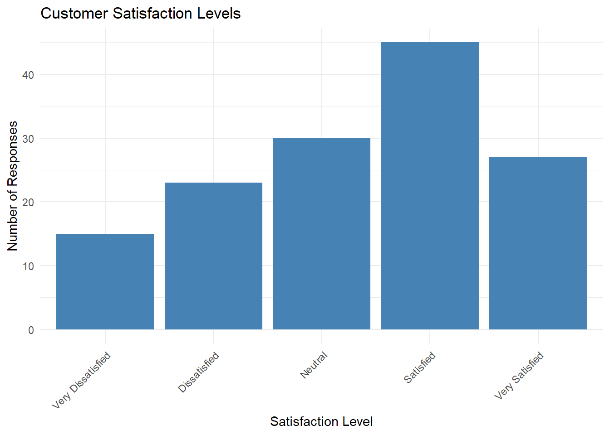
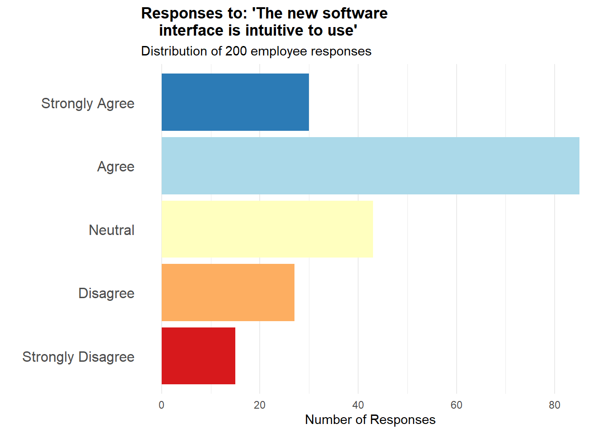
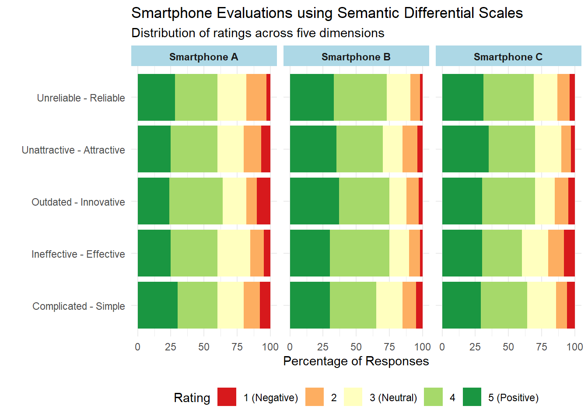
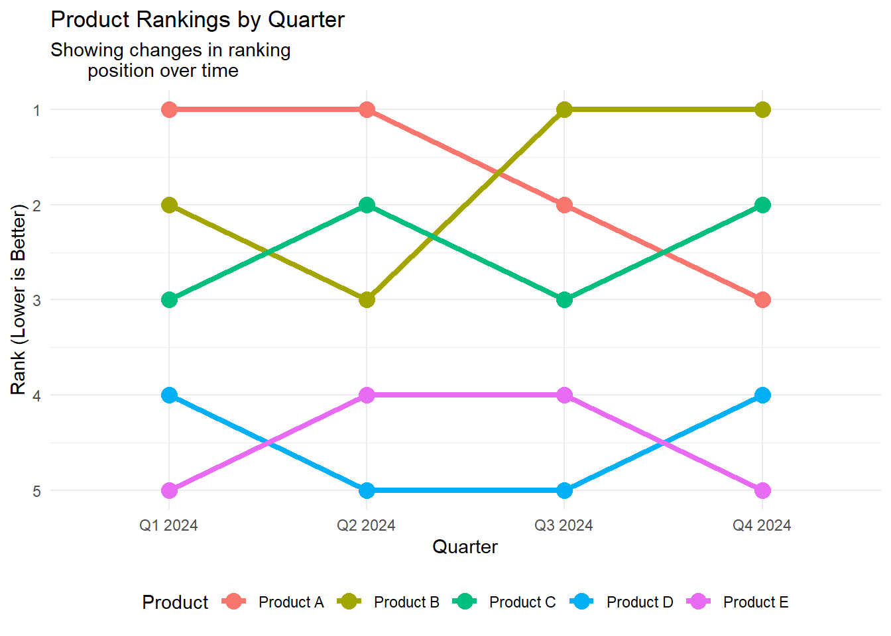
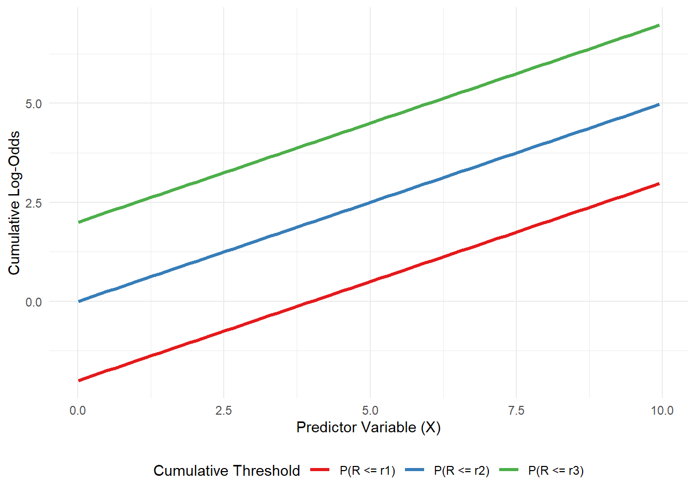
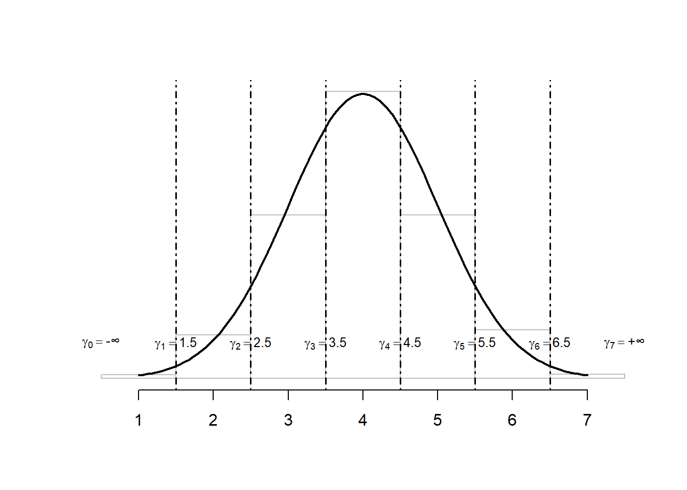
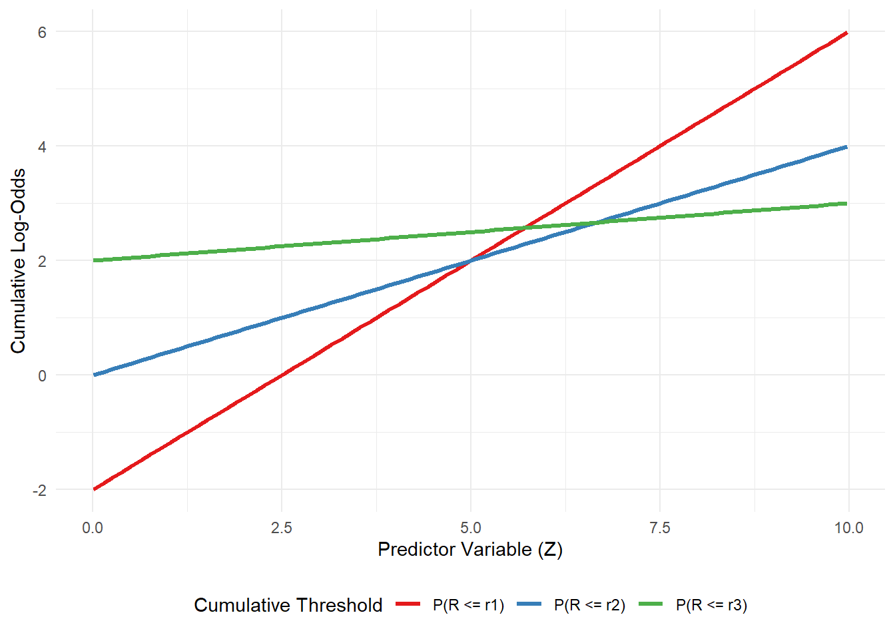

Ordinal Data Analysis in R
Measuring Human Perceptions from Surveys
Description of the course
Surveys are key tools for measuring human perceptions, capturing latent traits through structured responses. Among the data they generate, ordinal and rating data are particularly important yet often less studied, requiring specialized statistical techniques. Ordinal data appears frequently in real-world applications, such as customer satisfaction surveys, psychological assessments, and medical research, making its correct analysis crucial for obtaining reliable insights. This short course provides instructor-led, hands-on training in the analysis of ordinal data. It begins with an overview of survey design and the validation of results, focusing on building effective surveys and ensuring the reliability of the data obtained. The course then covers the most commonly used statistical models for analyzing ordinal data, with an emphasis on discovering latent patterns and traits. Both theoretical foundations and practical applications will be explored, using real-world case studies from domains such as marketing, social sciences, tourism and culture.
A common approach to analyzing ordinal data is to treat it as numerical, but this can lead to a loss of statistical power. In this course, participants will learn how to apply specialized methods designed for ordinal data, allowing them to draw more effective and reliable conclusions.
Objectives of the course
By the end of the course, participants will have both theoretical knowledge and practical skills to analyze ordinal data in research and professional settings. Specifically, they will be able to:
- Understand what ordinal data is, how it differs from other types of data, and the challenges involved in its analysis
- Compute and interpret reliability and validity measures
- Fit proportional odds models in R and interpret the results
- Analyse rating data by applying CUB models
1 Introduction to Ordinal Data and Survey Design
1.1 The Role of Measurement in Science
Measurement is a fundamental activity in science, indeed we acquire knowledge about the world around us by observing it, and we usually quantify to give a sense to what we observe. Therefore, measurement is essential in a wide range of research contexts.
There exist several situations in which scientists come up with measurement problems, even though they are not interested primary in measurement. For instance:
A health psychologist needs a measurement scale which doesn’t seem to exist. The study depends on a tool that can clearly distinguish between what individuals want to happen and what they expect to happen when visiting a physician. However, the review of previous research reveals that existing scales often blur this distinction, unintentionally mixing the two concepts. None of the available instruments capture the separation in the specific way her study requires. While the psychologist could create a few items that appear to address the difference between wants and expectations, she/he is concerned that these improvised questions may lack the reliability and validity necessary to serve as accurate measures.
An epidemiologist is conducting secondary analyses on data from a national health survey. They wish to investigate the link between perceived psychological stress and health status. Unfortunately, the survey did not include a validated stress measure. While it may be possible to construct one using existing items, a poorly constructed scale could lead to misleading conclusions.
A marketing team is struggling to design a campaign for a new line of high-end infant toys. Focus groups suggest that parents are heavily influenced by a toy’s perceived educational value. The team hypothesizes that parents with strong educational and career aspirations for their children are more likely to be interested in the product. To test this idea across a broad, geographically diverse sample, the team needs a way to reliably measure parental aspirations. Something that additional focus groups can’t easily provide.
Despite coming from different disciplines, these researchers share a common understanding: using arbitrary or poorly designed measurement tools increases the risk of collecting inaccurate data. As a result, developing their own carefully constructed measurement instruments appears to be the most reliable solution.
Historically, measurement problems were well-known in natural sciences such as physics and astronomy, even concerning figures like Isaac Newton. However, among social scientists, a debate arose regarding the measurability of psychological variables. While physical attributes like mass and length seem to possess an intrinsic mathematical structure similar to positive real numbers, the measurement of psychological variables was considered impossible by the Commission of the British Association for the Advancement of Science. The primary reason was the difficulty in objectively ordering or summing sensory perceptions, as well illustrated by the question: how can one establish that a sensation of “a little warm” plus another similar sensation equals “twice as warm”?
Measurement classification
The americal psychologist Stevens (1946) disagreed with this perspective. He contended that the rigid requirement of “strict additivity,” as seen in measurements of length or mass, was not essential for measuring sensations. He pointed out that individuals could make reasonably consistent ratio judgments regarding the loudness of sounds. For instance, they could determine if one sound was twice as loud as another.
Stevens further argued that this “ratio” characteristic enabled the data derived from such measurements to be mathematically analyzed. He is known for categorizing measurements into nominal, ordinal, interval, and ratio scales. In his view, judgments about sound “loudness” belonged to the ratio scale.
Despite the classification proposed by Stevens has been criticized by several authors and new classifications has been proposed, it is the most commonly accepted and used internationally.
Stevens identified four properties for describing the scales of measurement:
- Identity: each value has a unique meaning.
- Magnitude: the values of the variable have an ordered relationship to one another, so there is a specific order to the variables.
- Equal intervals: the data points along the scale are equally spaced, so the difference between data points one and two, is the same as data points three and four.
- A minimum value of zero: the scale has a true zero point.
As previously said, Stevens identified four scales of measurement, that is how variables are defined and categorised:
Nominal scale of measurement: This scale has certain characteristics, but doesn’t have any form of numerical meaning. The data can be placed into categories but can’t be multiplied, divided, added or subtracted from one another. It’s also not possible to measure the difference between data points. It defines only the identity property of data.
Examples: Gender, Etnicity, Eye colour…Ordinal scale of measurement: It defines data that is placed in a specific order. While each value is ranked, there’s no information that specifies what differentiates the categories from each other. These values can’t be added to or subtracted from.
Examples: satisfaction data points in a survey, where ‘one = happy, two = neutral and three = unhappy.’Interval scale of measurement: The interval scale contains properties of nominal and ordered data, but the difference between data points can be quantified. This type of data shows both the order of the variables and the exact differences between the variables. They can be added to or subtracted from each other, but not multiplied or divided (For example, 40 degrees is not 20 degrees multiplied by two.).
In this scale of measurement the zero is just a convention and not absolute, it is an existing value of the variable itself.Ratio scale of measurement: This scale include properties from all four scales of measurement. The data is nominal and defined by an identity, can be classified in order, contains intervals and can be broken down into exact value. Weight, height and distance are all examples of ratio variables. Data in the ratio scale can be added, subtracted, divided and multiplied. Ratio scales also differ from interval scales in that the scale has a ‘true zero’. The number zero means that the data has no value point.
An example of this is height or weight, as someone cannot be zero centimetres tall or weigh zero kilos.
1.2 Scales and Questionnaires development
Measurement plays a vital role across scientific disciplines, with each field creating specialized methods and tools tailored to its unique subjects of study. In the behavioral and social sciences, the area devoted to measurement is called psychometrics. This subfield concentrates on evaluating psychological and social constructs, which are most often assessed using questionnaires. Theaching how to build effective questionnaires would require a specific course, but this is out of the scope of this course. The following are some practical guidelines that researchers can use to develop measurement scales and questionnaires.
Determine Clearly What You Want to Measure
Researchers often discover their initial ideas about what they want to measure are vague, which can lead to costly changes later. Key questions include whether the scale should be theory-based or explore new directions, its level of specificity, and which aspects of the phenomenon to emphasize.
Define the theory: Basing scale development on relevant substantive theories is essential for clearly defining the construct being measured, particularly when dealing with abstract or non-observable phenomena. A theoretical basis helps establish the construct’s boundaries, reducing the risk of the scale extending into unrelated areas. In the absence of an existing theory, developers should create a conceptual framework of their own—beginning with a precise definition and linking the new construct to related, established ones.
Determine the level of specificity: In psychometric scale development, it’s important to consider how general or specific the measurement should be. This decision affects how well the scale works in predicting or relating to other variables. For example, if you’re interested in general attitudes about personal control, a broad scale scale works well. But if you’re studying beliefs about controlling a specific health issue, a focused scale is more appropriate.
Define which aspects are enphasised: Scale developers must clearly distinguish the target construct from related ones. Scales can be broad (e.g., general anxiety) or narrow (e.g., test anxiety). Including items outside the intended focus can lead to confusion or inaccurate measurement. For example, in health contexts, physical symptoms caused by an illness might be mistaken for psychological symptoms (like depression), leading to misleading results. Therefore, item selection should match the specific research purpose and avoid overlap with unrelated constructs.
Generate an Item Pool
When developing a psychometric scale, items should be carefully selected or created to match the specific construct you aim to measure. That means you need a clear idea of what the scale is supposed to do, and every item on the scale should reflect that goal.
Imagine the construct (like anxiety, motivation, or trust) as something hidden or latent, which can’t be observed directly. The items on your scale are the visible signs or behaviors that reflect this hidden thing. So, each item acts like a small “test” of how much of that construct a person has. If your items truly measure the construct, then someone with a high level of the trait should tend to score higher on all of them.
When constructing the item pool, it is important to consider the following aspects:
The latent construct A good scale includes multiple items to improve reliability, but every single item must still be strongly connected to the latent construct. You should think broadly and creatively when writing items to make sure they cover all the different ways the construct can be expressed—but without straying into measuring something else.
A construct is a single, unified idea (like “attitudes toward punishing drug abusers”) that can be thought of as causing how someone responds to related items. A category, on the other hand, is just a grouping of different constructs (like “attitudes” in general, or “barriers to compliance”).
Just because several items relate to the same category doesn’t mean they measure the same underlying construct. For instance, “Barriers to compliance” is a category that can include many distinct things (fear of symptoms, cost concerns, distance to treatment, etc.). Each of these could be a separate construct with its own latent variable, so a scale that mixes these up wouldn’t truly be unidimensional (i.e., measuring just one thing).Redundancy is crucial for reliability: multiple items allow common content to summate while idiosyncrasies cancel out. However, avoid superficial redundancy (e.g., minor wording changes, identical grammatical structures) which can inflate reliability estimates. Useful redundancy involves expressing the same core idea differently. Overly specific or redundant items within a broader scale can create subclusters (e.g., multiple specific anxiety items in a general emotion scale), potentially undermining unidimensionality and biasing the scale. This is less of a problem if the items match the scale’s intended specificity.
The number of items Start with more items than planned for the final scale (e.g., 3-4 times as many) to allow for careful selection and ensure good internal consistency. An initial pool 50% larger might suffice if items are hard to generate or fewer are needed for reliability. If the pool is too large, eliminate items based on criteria like lack of clarity or relevance.
The wording Including both positively worded items (indicating the presence of the construct) and negatively worded items (indicating its absence or low levels) is a common strategy to reduce acquiescence bias—the tendency of respondents to agree with statements regardless of their content. However, reversing the wording can sometimes confuse participants, particularly in general population or community samples, and this confusion may reduce the scale’s reliability.
Reversing the wording of items (also known as reversed polarity) can confuse respondents, especially if the items are complex or abstract, ot if the respondents have lower reading comprehension or aren’t used to taking surveys.
This confusion can lead to inconsistent or inaccurate responses, which lowers the reliability of the scale (i.e., how consistently it measures the construct).
Determine the Format for Measurement
Defining the measurement format is a critical step in designing data collection instruments like questionnaires and scales. This decision, ideally made concurrently with item generation, impacts data quality, variability, instrument sensitivity, and ultimately, research conclusions.
Most scale items consist of two parts: a stem and a series of response options. A kew aspect of the scale items is the number of response options. A desiderable quality of a measurement scale is variability. One way to increase opportunities for variability is to include lots of scale items. Another way is to provide numerous respose options within each item, especially with fewer items.
In this view, continuous formats (e.g., thermometer scales) offer many gradations, and so increase the opportunities for variability. However, too many options can exceed respondents’ ability to meaningfully discriminate, leading to “false precision” and increased error variance. Researchers must balance the need for variability with respondents’ cognitive limitations.
Another issue the investigator has to concern with, is whether the number of options should be even or odd. This choice depends on the type of question. the type of response option, and the objectives of the investigator.
An odd number of categories usually allows to express neutrality, while an even number of categories forces a choice from the respondent. The choice depends on whether allowing neutrality is desirable or should be avoided.
There exist several ways to present items that are commonly used:
- Likert scales: are widely used psychometric tools designed to measure attitudes, opinions, and perceptions by assessing the degree of agreement or disagreement with a statement. These scales typically present a statement (called a Likert item) followed by an ordered series of response options, generally consisting of five or seven points. However, scales with four, nine, or ten points can also be employed.
Response anchors are the labels that define each point on the scale (for example, “Strongly disagree,” “Disagree,” “Neutral,” “Agree,” “Strongly agree”). Scales with an odd number of points often include a neutral midpoint, while scales with an even number of points force the respondent to express a direction (agreement or disagreement).
Likert scales are extensively applied in surveys to assess employee engagement, customer satisfaction, product feedback, and clinical evaluations.
Although Likert scale data is often numerically coded to facilitate analysis, it’s essential to remember their ordinal nature and approach the calculation of means with caution.
- Semantic Differential scales: are assessment tools used to measure attitudes and opinions toward an object, person, event, or idea through pairs of bipolar adjectives. Developed by psychologist Charles E. Osgood, these scales present a concept followed by several rows of opposite adjective pairs placed at the extremes of a continuum, typically with five to seven intermediate points. Respondents evaluate the concept on each adjectival scale by selecting the point that best represents their attitude. Examples of bipolar adjective pairs include “Good - Bad,” “Happy - Sad,” “Strong - Weak,” and “Pleasant - Unpleasant.” These scales are commonly used in market research, branding, and customer satisfaction assessments to understand perceptions and associations.
Semantic differential scales explore the connotative meaning of a concept, revealing the emotional and evaluative dimensions of attitudes, unlike Likert scales which primarily focus on the degree of agreement.
- Rankings: represent data where items are ordered according to a specific criterion or preference. Respondents arrange items in a sequence based on their preference, importance, or another defined attribute. Examples include ranking favorite movies, product features by importance, or job candidates. Ranking data indicates relative order but not the magnitude of difference between positions. The difference between the first and second positions might be substantial, while the difference between lower positions might be negligible.
- Visual Analog Scale (VAS): Presents a continuous line between two descriptors and the respondents mark a point on the line. Therefore, it is clear that this scale allows continuous scoring but it has to be noted that interpretation can be subjective, and comparisons across individuals may be difficult. An advantage of this type of scale is that it is shghly sensitive, so it useful for detecting subtle changes within individuals over time; moreover they may reduce reduce bias from recalling previous discrete responses.
- Binary Options: Offer two choices (e.g., agree/disagree, yes/no, check if applies). This type of option is simple for respondents but yields to minimal variability per item, therefore more items are required for obtaining an adequate scale variance. However, the ease of response may allow for more items to be administered.
Experts’ review
Expert review plays a key role in strengthening content validity during scale development. By drawing on their subject-matter expertise, reviewers help ensure that the items meaningfully represent the construct.
Experts are typically asked to assess how well each item reflects the construct definition, providing feedback that can confirm or refine the conceptual framework. They also evaluate the clarity and precision of item wording, offering suggestions to reduce ambiguity. In addition, experts may highlight important aspects of the construct that have been overlooked.
However, it’s important to note that content experts may not be familiar with psychometric principles. For instance, they might recommend eliminating seemingly redundant items, not realizing that some redundancy is intentional and necessary for reliability. While expert input is highly valuable, final decisions should rest with the scale developer, who must balance expert judgment with methodological rigor.
Subsequent Steps in Scales Development
Following the initial design of the questionnaire, including the selection and construction of appropriate scales, the next crucial phase involves preparing for validation and data collection. This includes strategically incorporating additional items aimed at facilitating later validation efforts, such as those designed to detect response biases or to assess the questionnaire’s construct validity by measuring theoretically related concepts.
Subsequently, the questionnaire is administered to a development sample. It’s essential that this sample is sufficiently large and representative of the target population to ensure stable results and minimize concerns about subject variance.
Once the data is collected, a thorough evaluation of the individual items is undertaken. This involves examining their intercorrelations to ensure they are measuring a common underlying construct, addressing any negatively correlated items through techniques like reverse scoring, and assessing the correlation of each item with the overall scale. Furthermore, the variance and means of the items are analyzed to ensure they discriminate effectively among respondents. Factor analysis is employed to confirm the dimensionality of the scale, and reliability, often measured by Cronbach’s alpha, is calculated to assess the internal consistency of the items.
Finally, the length of the scale is optimized. This involves balancing the need for brevity to reduce respondent burden with the desire for higher reliability, which is generally associated with longer scales. Weak items that negatively impact reliability are considered for removal, and techniques like splitting the development sample for cross-validation can be used to ensure the stability of the optimized scale in new samples.
1.3 Visualizing Ordinal Data
The most important principle in visualizing ordinal data is to always represent ordinal categories in their natural, ordered sequence in any visual representation. In bar charts, bars should be arranged along the axis based on the logical order of the ordinal scale (e.g., from “Low” to “High”). For stacked and divergent bar charts, the segments representing ordinal categories should also follow this intrinsic order within each bar.
Code
library(ggplot2)
# Create sample data
satisfaction <- data.frame(
level = factor(c("Very Dissatisfied", "Dissatisfied", "Neutral", "Satisfied", "Very Satisfied"),
levels = c("Very Dissatisfied", "Dissatisfied", "Neutral", "Satisfied", "Very Satisfied")),
count = c(15, 23, 30, 45, 27)
)
# Create bar chart with ordered categories
ggplot(satisfaction, aes(x = level, y = count)) +
geom_bar(stat = "identity", fill = "steelblue") +
theme_minimal() +
labs(title = "Customer Satisfaction Levels",
x = "Satisfaction Level",
y = "Number of Responses") +
theme(axis.text.x = element_text(angle = 45, hjust = 1))
The choice of chart should align with the research question and the specific aspect of ordinal data being investigated. Not all chart types are equally effective for representing ordered categorical data.
Bar Charts
Represent each ordinal category with a bar, whose height or length corresponds to the frequency or count of that category. Fundamentally, the bars must be arranged in the logical order of the ordinal variable (e.g., from lowest to highest category). They can be vertical or horizontal; horizontal orientation is often preferred for readability of long category labels.
Bar charts provide a clear and easily understandable visualization of the distribution of a single ordinal variable, highlighting the frequency of each ordered category.
Code
library(ggplot2)
library(dplyr)
# Create sample Likert scale data for one survey question
likert_data <- data.frame(
response_category = factor(
c("Strongly Disagree", "Disagree",
"Neutral", "Agree", "Strongly Agree"),
levels = c("Strongly Disagree", "Disagree",
"Neutral", "Agree", "Strongly Agree")
),
frequency = c(15, 27, 43, 85, 30)
)
# Create horizontal bar chart with properly ordered categories
ggplot(likert_data, aes(x = response_category,
y = frequency,
fill = response_category)) +
geom_bar(stat = "identity") +
scale_fill_manual(values = c(
"Strongly Disagree" = "#d7191c",
"Disagree" = "#fdae61",
"Neutral" = "#ffffbf",
"Agree" = "#abd9e9",
"Strongly Agree" = "#2c7bb6"
)) +
coord_flip() + # Horizontal orientation for better label readability
theme_minimal() +
labs(
title = "Responses to: 'The new software
interface is intuitive to use'",
subtitle = "Distribution of 200 employee responses",
x = "",
y = "Number of Responses"
) +
theme(
legend.position = "none", # Remove legend as colors are self-explanatory
axis.text.y = element_text(size = 12),
plot.title = element_text(face = "bold"),
panel.grid.major.y = element_blank() # Remove horizontal grid lines
)
Stacked Bar Charts
Show multiple ordinal categories within a single bar, with each segment representing a different category stacked on top of another. They are useful for comparing the distribution of ordinal data across different groups or conditions. They can be displayed as counts or as percentages (where each bar totals 100%).
Stacked bar charts allow comparison of both total amounts within each group and the proportion of each ordinal category within those groups, providing insights into how distributions differ between categories.
Code
library(ggplot2)
library(dplyr)
library(tidyr)
# Create sample semantic differential scale data
# This represents evaluations of three different smartphones on five dimensions
semantic_data <- data.frame(
product = rep(c("Smartphone A", "Smartphone B", "Smartphone C"), each = 5),
dimension = rep(c("Ineffective - Effective",
"Complicated - Simple",
"Unreliable - Reliable",
"Outdated - Innovative",
"Unattractive - Attractive"), 3),
rating_1 = c(5, 8, 3, 10, 7, # Smartphone A
2, 5, 2, 3, 4, # Smartphone B
8, 6, 4, 5, 3), # Smartphone C
rating_2 = c(10, 12, 15, 8, 13, # Smartphone A
8, 10, 7, 9, 11, # Smartphone B
12, 8, 9, 10, 7), # Smartphone C
rating_3 = c(25, 20, 22, 18, 20, # Smartphone A
15, 20, 18, 13, 15, # Smartphone B
20, 22, 18, 15, 20), # Smartphone C
rating_4 = c(35, 30, 32, 40, 35, # Smartphone A
45, 35, 40, 38, 35, # Smartphone B
30, 35, 38, 40, 35), # Smartphone C
rating_5 = c(25, 30, 28, 24, 25, # Smartphone A
30, 30, 33, 37, 35, # Smartphone B
30, 29, 31, 30, 35) # Smartphone C
)
# Reshape data for ggplot
semantic_long <- semantic_data %>%
pivot_longer(cols = starts_with("rating_"),
names_to = "rating_level",
values_to = "count") %>%
mutate(
rating_number = as.numeric(substr(rating_level, 8, 8)),
rating_label = factor(
case_when(
rating_number == 1 ~ "1 (Negative)",
rating_number == 2 ~ "2",
rating_number == 3 ~ "3 (Neutral)",
rating_number == 4 ~ "4",
rating_number == 5 ~ "5 (Positive)"
),
levels = c("1 (Negative)", "2", "3 (Neutral)", "4", "5 (Positive)")
)
)
# Calculate percentages for each product-dimension combination
semantic_pct <- semantic_long %>%
group_by(product, dimension) %>%
mutate(
percentage = count / sum(count) * 100,
total = sum(count)
) %>%
ungroup()
# Create stacked bar chart
ggplot(semantic_pct, aes(x = dimension, y = percentage, fill = rating_label)) +
geom_bar(stat = "identity") +
facet_wrap(~ product) +
scale_fill_manual(values = c("1 (Negative)" = "#d7191c",
"2" = "#fdae61",
"3 (Neutral)" = "#ffffbf",
"4" = "#a6d96a",
"5 (Positive)" = "#1a9641")) +
coord_flip() +
theme_minimal() +
labs(title = "Smartphone Evaluations using Semantic Differential Scales",
subtitle = "Distribution of ratings across five dimensions",
x = "",
y = "Percentage of Responses",
fill = "Rating") +
theme(
legend.position = "bottom",
strip.background = element_rect(fill = "lightblue", color = NA),
strip.text = element_text(face = "bold")
)
This visualization effectively reveals patterns such as which smartphone is perceived as more innovative, which has the most consistent ratings across dimensions, and where the greatest differences between products exist. These insights would be difficult to discern from tables of raw data. The stacked bar format is particularly effective for semantic differential scales because it shows the full distribution of responses, not just averages, allowing you to see whether opinions are polarized or consistent across respondents.
Divergent Stacked Bar Charts
Specifically designed to visualize ordinal data with a neutral central category or bipolar responses, such as Likert scales and semantic differentials. Segments representing responses on one side of the neutral point extend in one direction, while segments representing responses on the other side extend in the opposite direction from a central baseline. They effectively illustrate the balance between positive and negative responses and the distribution of opinions.
Divergent stacked bar charts are the recommended visualization for Likert-type scales as they clearly show the proportion of responses in each category and the overall tendency of agreement or disagreement.
Code
# Install and load required package
# install.packages("HH")
library(HH)
# Frequency data for three items (rows) on a 5-point Likert scale
likert_data <- data.frame(
"Easy" = c(5, 15, 20, 40, 20),
"Helpful" = c(10, 18, 25, 30, 17),
"Recommend" = c(8, 12, 15, 35, 30)
)
# Set column names (Likert scale labels)
rownames(likert_data) <- c("Strongly Disagree", "Disagree", "Neutral", "Agree", "Strongly Agree")
likert_data <- t(likert_data) # Transpose: items as columns, scale points as rows
# Create the Likert plot
likert_plot <- likert(likert_data,
main = "Customer Feedback on Product Experience",
xlab = "Percentage of Responses",
ylab = NULL,
positive.order = TRUE,
reference = 0)
# Display the plot
print(likert_plot)
Other Possible Visualizations
Depending on the specific analytical objective, these alternative visualizations can provide valuable perspectives on ordinal data, particularly when exploring relationships between variables or tracking changes in rankings.
Mosaic plots show the relationship between two or more categorical variables, including ordinal ones, using tiled rectangles whose area is proportional to the frequency of each combination of categories.
Code
# install.packages("ggmosaic")
library(ggplot2)
library(ggmosaic)
library(dplyr)
# Create sample data for education level (ordinal)
#and job satisfaction (ordinal)
set.seed(123)
n <- 500
education_levels <- c("High School", "Associate's", "Bachelor's",
"Master's", "Doctorate")
satisfaction_levels <- c("Very Dissatisfied", "Dissatisfied",
"Neutral", "Satisfied", "Very Satisfied")
# Create sample data with a pattern
#(higher education tends to correlate with higher satisfaction)
mosaic_data <- data.frame(
education = factor(sample(education_levels, n, replace = TRUE,
prob = c(0.3, 0.25, 0.25, 0.15, 0.05)),
levels = education_levels),
satisfaction = factor(NA, levels = satisfaction_levels)
)
# Generate satisfaction levels with
#some correlation to education
for (i in 1:n) {
# Higher education levels tend to have higher satisfaction probabilities
edu_level <- which(education_levels == mosaic_data$education[i])
# Adjust probabilities based on education level
probs <- c(0.25, 0.25, 0.2, 0.2, 0.1) # Base probabilities
# Shift probabilities based on education level
shift <- (edu_level - 3) * 0.05 # Shift factor based on education
# Adjust probabilities (higher education gets
#more weight for higher satisfaction)
adjusted_probs <- probs + c(-0.1, -0.05, 0, 0.05, 0.1) * edu_level
# Ensure probabilities are valid
adjusted_probs <- pmax(adjusted_probs, 0.01)
adjusted_probs <- adjusted_probs / sum(adjusted_probs)
mosaic_data$satisfaction[i] <- sample(satisfaction_levels, 1, prob = adjusted_probs)
}
# Create mosaic plot
ggplot(data = mosaic_data) +
geom_mosaic(aes(x = product(education),
fill = satisfaction)) +
scale_fill_brewer(palette = "RdYlGn", direction = 1) +
labs(title = "Relationship Between
Education Level and Job Satisfaction",
subtitle = "Mosaic plot showing the
distribution of satisfaction within
each education level",
x = "Education Level",
y = "Job Satisfaction",
fill = "Satisfaction Level") +
theme_minimal() +
theme(axis.text.x = element_text(angle = 45, hjust = 1),
legend.position = "bottom")
This mosaic plot visualizes the relationship between two ordinal variables: education level and job satisfaction. The width of each column represents the proportion of respondents with that education level in the overall sample. Within each education level column, the height of each colored section represents the proportion of respondents reporting that satisfaction level.
Line charts (bump charts) visualize the change in rank of different items over time or between categories, emphasizing movement in relative positions.
Code
library(ggplot2)
library(tidyr)
library(dplyr)
# Create sample data for product rankings over time
rankings <- data.frame(
product = rep(c("Product A", "Product B",
"Product C", "Product D", "Product E"), 4),
quarter = rep(c("Q1 2024", "Q2 2024",
"Q3 2024", "Q4 2024"), each = 5),
rank = c(1, 2, 3, 4, 5, # Q1 rankings
1, 3, 2, 5, 4, # Q2 rankings
2, 1, 3, 5, 4, # Q3 rankings
3, 1, 2, 4, 5) # Q4 rankings
)
# Create bump chart
ggplot(rankings, aes(x = quarter, y = rank,
group = product, color = product)) +
geom_line(size = 1.5) +
geom_point(size = 4) +
scale_y_reverse(breaks = 1:5) + # Reverse Y-axis so
# rank 1 is at the top
theme_minimal() +
labs(title = "Product Rankings by Quarter",
subtitle = "Showing changes in ranking
position over time",
x = "Quarter",
y = "Rank (Lower is Better)",
color = "Product") +
theme(legend.position = "bottom")
2 Classical Models for Ordinal Data
2.1 Limitations of most commonly used models
Limitations of Linear Regression:
Linear regression is designed for dependent variables that are continuous and can take any value within a range (or at least have a large number of distinct, equally-spaced values). Applying linear regression to ordinal data involves treating the ordered categories as if they were numerical scores with equal intervals between them.
Ignores Non-Interval Nature: The primary issue is that linear regression assumes that the difference between category 1 and 2 is the same as the difference between category 2 and 3, and so on. For ordinal data, this is often not true. The “distance” between “Very Dissatisfied” and “Dissatisfied” might not be the same in the minds of respondents as the distance between “Satisfied” and “Very Satisfied.” By assigning numerical scores (e.g., 1, 2, 3, 4, 5) and running linear regression, we impose an arbitrary interval structure that the data doesn’t necessarily possess. This can lead to inaccurate estimates of the effects of predictors.
Violation of Assumptions: Linear regression assumes the dependent variable is continuous and errors are normally distributed with constant variance. For an ordinal variable with a limited number of categories, these assumptions are violated. The predicted values from a linear model can also fall outside the valid range of the ordinal scale (e.g., predicting a satisfaction level of 0.5 or 5.8 on a 1-5 scale).
Misleading Interpretation: Interpreting coefficients in linear regression involves saying that a one-unit increase in a predictor is associated with a certain change in the mean score of the ordinal variable. This interpretation is based on the problematic assumption of equal intervals and might not accurately reflect the underlying process generating the ordinal response.
Limitations of Binary Logistic Regression:
Binary logistic regression is suitable for dependent variables with exactly two outcomes (e.g., Yes/No, Success/Failure). To use it with an ordinal variable, you have to collapse the multiple ordered categories into just two.
Loss of Information: The biggest drawback is the loss of valuable information about the granularity and ordering of the original categories. Forcing a 5-point scale into a binary outcome (e.g., “Satisfied/Very Satisfied” vs. “Dissatisfied/Neutral/Very Dissatisfied”) discards the nuances within the original categories. A model that can distinguish between “Dissatisfied” and “Very Dissatisfied” will likely be more informative than one that groups them.
Arbitrary Threshold: The choice of where to split the ordinal scale into two groups is often arbitrary. Different researchers might choose different cut-off points, and this arbitrary choice can significantly influence the results and conclusions drawn from the analysis. The effect of a predictor might appear different depending on how the dichotomization is performed.
Reduced Statistical Power: By reducing the number of outcomes, you potentially reduce the variability captured by the dependent variable, which can lead to a loss of statistical power to detect significant effects of your predictors compared to a model that utilizes the full ordinal scale.
Limitations of Multinomial Logistic Regression:
Multinomial (or polytomous) logistic regression is designed for dependent variables with three or more categories that have no natural order (e.g., choice of car color: red, blue, green). While it can handle multiple categories, its fundamental structure doesn’t account for ranking.
Ignores the Order: Multinomial logistic regression models the probability of being in each category relative to a chosen baseline category. It estimates a separate set of coefficients for each category comparison (e.g., Category 2 vs. Category 1, Category 3 vs. Category 1, etc.). It treats the categories as distinct nominal outcomes, completely ignoring the fact that category 3 falls between category 2 and category 4 in a meaningful way.
Difficult Interpretation (in terms of Order): The coefficients in a multinomial logit model are interpreted in terms of the change in log-odds of being in a specific category versus the baseline category for a one-unit change in a predictor. While technically correct, relating these separate category-specific effects back to the overall ordered nature of the dependent variable can be cumbersome and less intuitive than the single cumulative odds ratio provided by the cumulative logit model (when the proportional odds assumption holds). It doesn’t directly answer questions like “how does this predictor affect the likelihood of being in a higher category?”
2.2 Modeling Cumulative Probabilities
The primary methodology for modeling ordinal data revolves around the cumulative probabilities associated with the ordered categories. This approach respects the inherent order of the data, ensuring that these probabilities monotonically increase as we move up the ordinal scale.
To more appropriately handle ordinality, the cumulative probabilities approach modifies logistic regression by applying transformations that consider the order of the categories. A common transformation is the logit transformation applied to the cumulative probabilities, which enhances the model’s ability to capture the ordered nature of the data. Other transformations, such as probit or log-log, can also be used depending on the specific data characteristics and analytical requirements.
Definition: Given an ordinal variable \(R\) with \(m\) ordered categories, let’s denote these categories as \(r_1, r_2, \dots, r_m\), where \(r_1\) is the “lowest” category and \(r_m\) is the “highest”. The categories have a meaningful order: \(r_1 \leq r_2, \leq \dots, \leq r_m\).
A cumulative probability for a specific category \(r_j\) is the probability that the observed response \(R\) falls into category \(r_j\), or any category below it. Mathematically, this is expressed as \(P(R \leq r_j)\).
We can define \(m-1\) such cumulative probabilities, corresponding to the thresholds between the categories:
For the first category \(r_1\):
\(P(R \leq r_1) = P(R = r_1)\) is simply the probability of being in the lowest category.For the first category \(r_2\):
\(P(R \leq r_2) = P(R = r_1) + P(R = r_2)\) is the probability of being in the second category or any category below it (which is just the first category).For the third category \(r_3\):
\(P(R \leq r_3) = P(R = r_1) + P(R = r_2) + P(R = r_3)\) is the probability of being in the third category or any category below it.…and so on, up to the \((m-1)\)-th category \(r_{(m-1)}\):
\(P(R \leq r_{(m-1)}) = P(R = r_1) + P(R = r_2) + P(R = r_3) + \dots + P(R = r_{(m-1)})\) is the probability of being in the second-highest category or any category below it.For the last category \(r_m\) \(r_{(m-1)}\):
\(P(R \leq r_m) = P(R = r_1) + P(R = r_2) + P(R = r_3) + \dots + P(R = r_{(m-1)})+ P(R = r_m)=1\), which is the cumulative probability is always 1 because it includes all possible outcomes. Since it carries no information about the differences between categories, it is not included in the modeling process; we only model the first \(m-1\) cumulative probabilities.
The use of cumulative probabilities is a clever way to turn the ordinal modeling problem into a series of binary comparisons, while respecting the order. Each cumulative probability \(P(R \leq r_j)\) inherently creates a binary split at the threshold \(r_j\): - Outcome 1: the response is in category \(r_j\) or lower \((R\leq r_j)\); - Outcome 2: The response is in category higher than \(r_j\) \((R > r_j)\).
By modeling the probability of this binary outcome for each threshold \(j=1,\dots,m−1\), we capture the transitions between categories along the ordered scale. The cumulative logit model then applies the logit transformation to these cumulative probabilities, allowing them to be related to a linear combination of predictors.
Numerical Example: Let’s consider a simple ordinal variable, “Product Satisfaction,” with \(m = 4\) ordered categories:
- \(r_1\): Very Dissatisfied (VD)
- \(r_2\): Dissatisfied (D)
- \(r_3\): Satisfied (S)
- \(r_4\): Very Satisfied (VS)
Suppose, for a particular group of individuals, the probabilities of being in each specific category are:
- \(P(R=VD)=P(R=r_1)=0.10\)
- \(P(R=D)=P(R=r_2)=0.20\)
- \(P(R=S)=P(R=r_3)=0.40\)
- \(P(R=VS)=P(R=r_4)=0.30\)
Now, let’s calculate the cumulative probabilities:
Cumulative Probability for \(r_1\) (VD)
\(P(R \leq r_1) = P(R = VD) = 0.10\)
This represents the probability of being in the “Very Dissatisfied” category or below (just VD). The implied binary split is \(\{VD\}\) vs \(\{D, S, VS\}\).Cumulative Probability for \(r_2\) (D)
\(P(R \leq r_2) = P(R = VD) + P(R = D) = 0.10 + 0.20 = 0.30\)
This represents the probability of being in the “Dissatisfied” category or below (VD or D). The implied binary split is \(\{VD, D\}\) vs \(\{S, VS\}\).Cumulative Probability for \(r_3\) (S)
\(P(R \leq r_3) = P(R = VD) + P(R = D) + P(R = S) = 0.10 + 0.20 + 0.40 = 0.70\)
This represents the probability of being in the “Satisfied” category or below (VD, D, or S). The implied binary split is \(\{VD, D, S\}\) vs \(\{VS\}\).Cumulative Probability for \(r_4\) (VS)
\(P(R \leq r_4) = P(R = VD) + P(R = D) + P(R = S) + P(R = VS) = 0.10 + 0.20 + 0.40 + 0.3 = 1\) As expected, the cumulative probability for the highest category is 1. We do not model this.
So, for this 4-category variable, the cumulative logit model will focus on modeling the relationships between predictors and the first \(m−1=4−1=3\) cumulative probabilities. Each of these represents a different threshold or cut-point on the ordered scale.
2.3 The Cumulative Logit with Proportional Odds Assumption
To be able to model the relationship between the cumulative probabilities and the explanatory variables, a function is needed and, as in the binary logistic regression, we use the logit to model the probability of success. In the case of ordinal data, we apply the logit not to the probability of a single category, but to the cumulative probabilities.
The cumulative logit transformation for the \(j\)-th threshold (where \(j\) goes from \(1\) to \(m−1\)) is defined as the natural logarithm of the cumulative odds:
\[ \text{logit} [ P (R \leq r_j)] = \log \Bigg( \frac{P(R \leq r_j)}{1-P(R \leq r_j)}\Bigg) \tag{1}\]
Since \(1-P(R \leq r_j)\) is the probability that the outcome \(R\) is greather than the category \(r_j\). So, the cumulative logit can be rewritten as:
\[ \text{logit} [ P (R \leq r_j)] = \log \Bigg( \frac{P(R \leq r_j)}{P(R > r_j)}\Bigg) \tag{2}\]
This expression represents the natural logarithm of the odds of being in category \(r_j\) or any category below it, versus being in any category above \(r_j\). This transformation, as in the case of the binary logistic regression, maps probabilities (which are between 0 and 1) onto the entire real number line \((-\infty, + \infty)\). This allows us to equate the logit of this cumulative probability to a linear combination of our predictors, which can take any real value.
The resulting statistical model, and the most common one for ordinal data with a cumulative logit link, is known as the Cumulative Logit Proportional Odds Model. Its basic structure assumes that the cumulative logit for each threshold is a linear function of the predictor variables:
\[ \text{logit}[P(R\leq r_j | X_1, \dots, X_k)] = \alpha_j + \beta_1X_1 + \beta_2X_2 + \dots + \beta_kX_k \tag{3}\]
This equation is estimated simultaneously for each of the \(m-1\) cumulative thresholds. in this equation:
\(P(R \leq r_j | \boldsymbol{X})\) is the cumulative probability of being in category \(r_j\) or lower, conditional on the values of the predictor variables \(X_1 ,X_2, \dots, X_k\).
\(\alpha_j\) are the intercepts of the model. A crucial aspect of the cumulative logit model is that there is a different intercept for each of the \(m-1\) cumulative logits we are modeling.
\(\alpha_1\) is the intercept for \(\text{logit}[P(R\leq r_1)]\), \(\alpha_2\) is the intercept for \(\text{logit}[P(R\leq r_2)]\), and \(\alpha_{(m-1)}\) is the intercept for \(\text{logit}[P(R\leq r_{(m-1)})]\).
These intercepts represent the baseline cumulative log-odds for their respective threshold when all the predictor variables X are zero.
It is necessary that these intercepts are ordered: \(\alpha_1 \leq \alpha_2 \leq \dots \leq \alpha_{(m-1)}\).
This ensures that the resulting cumulative probabilities are non-decreasing as j increases.\(\beta_1, \beta_2, \dots, \beta_k\) are the coefficients associated to each predictor variables \(X_1\), \(X_2\), \(\dots, X_k\).
Since we are operating under proportional odds assumption, in this model these is only one set of \(\beta\) coefficients that applies across all \(m-1\) cumulative logit equations.
This implies that the effect of each predictor on the cumulative log-odds is the same.
To demonstrate the proportional odds assumption, let’s consider the cumulative odds for two distinct sets of predictor values: \(\boldsymbol{X}^{(1)} = (X_1^{(1)}, \dots, X_k^{(1)})\) and \(\boldsymbol{X}^{(2)} = (X_1^{(2)}, \dots, X_k^{(2)})\).
The cumulative odds at threshold \(r_j\) for the first set of predictors \(\boldsymbol{X}^{(1)}\) are: \[ \text{Odds}(R \leq r_j | \boldsymbol{X}^{(1)}) =\exp \Bigg( \alpha_j + \sum_{i=1}^{k} \beta_iX_i^{(1)} \Bigg) \] Similarly, for the second set of predictors \(\boldsymbol{X}^{(2)}\):
\[ \text{Odds}(R \leq r_j | \boldsymbol{X}^{(2)}) = \exp \Bigg( \alpha_j + \sum_{i=1}^{k} \beta_iX_i^{(2)} \Bigg) \] The Odds Ratio (OR) comparing the cumulative odds at \(\boldsymbol{X}^{(2)}\) to those at \(\boldsymbol{X}^{(1)}\) for the event \(R \leq r_j\) is: \[ \text{OR}_j = \frac{\text{Odds}(R \leq r_j | \boldsymbol{X}^{(2)})}{\text{Odds}(R \leq r_j | \boldsymbol{X}^{(1)})} \] Substituting the exponential expressions for the odds: \[ \text{OR}_j = \frac{\exp \Big( \alpha_j + \sum_{i=1}^{k} \beta_iX_i^{(2)} \Big)}{\exp \Big( \alpha_j + \sum_{i=1}^{k} \beta_iX_i^{(1)} \Big)} \] Using the property \(e^a / e^b = e^{a-b}\), we can simplify the expression: \[ \text{OR}_j = \exp \Bigg( \Big( \alpha_j + \sum_{i=1}^{k} \beta_iX_i^{(2)} \Big) - \Big( \alpha_j + \sum_{i=1}^{k} \beta_iX_i^{(1)} \Big) \Bigg) \]
Crucially, the intercept term \(\alpha_j\) cancels out:
\[ \text{OR}_j = \exp \Bigg( \sum_{i=1}^{k} \beta_iX_i^{(2)} - \sum_{i=1}^{k} \beta_iX_i^{(1)} \Bigg) \]
This can be further condensed:
\[ \text{OR}_j = \exp \Bigg( \sum_{i=1}^{k} \beta_i(X_i^{(2)} - X_i^{(1)}) \Bigg) \]
As evident from this final formula, the Odds Ratio (\(\text{OR}_j\)) does not contain the subscript \(j\). This signifies that the odds ratio associated with a change in the predictor variables is constant across all \(m-1\) cumulative thresholds. This inherent consistency in the effect of predictors across the ordinal categories is precisely what defines the proportional odds assumption. It means that while the baseline odds change for each category, the multiplicative effect of the predictors on these odds remains the same.
Graphically, this translates to parallelism on the log-odds scale. If you were to plot the cumulative log-odds for different levels of a predictor, you would see a set of parallel lines. For example, imagine an ordinal outcome with four categories (e.g., ‘Low’, ‘Medium’, ‘High’, ‘Very High’). There would be three cumulative probabilities: \(P(R\leq Low)\), \(P(R \leq Medium)\), and \(P(R \leq High)\). If the Proportional Odds assumption holds for a continuous predictor, then the log-odds for each of these cumulative probabilities would change by the same amount for a one-unit increase in that predictor.
You would visualize three separate curves, one for each cumulative probability, plotted against the predictor on the x-axis, with the y-axis representing the logit of these probabilities. If the Proportional Odds assumption holds, these three curves would run parallel to each other across the entire range of the predictor. They would be shifted vertically relative to each other (due to the different \(\alpha_j\), but their slopes (the \(\beta\) coefficients) would be identical.

The Proportional Odds assumption is useful for two main reason:
Parsimony and Simplicity: This is a major advantage. If the assumption holds, the \(\beta\) coefficients are estimated for each predictor, regardless of the number of categories \(m\). Fewer parameters make the model easier to estimate, interpret, and potentially more stable, especially with smaller sample sizes.
Clear and Consistent Interpretation: A single Odds Ratio per predictor provides a clear, concise summary of its effect across the entire ordinal scale.
Latent Variable Motivation
To better understand this model we can think about an underlying, unobserved latent continuous variable, called \(R^*\). Let’s imagine that the ordinal response \(R\) that we observe is actually a categorized version of the continuous unobserved variable \(R^*\). We can assume that \(R^*\) is linearly related to our predictors plus some error, similar to a standard linear regression model:
\[ R^* = \beta_0^* + \beta_1^*X_1 + \dots + \beta_k^*X_k + \epsilon \]
We can set some fixed thresholds, \(\gamma_0 = -\infty, \gamma_1\), \(\gamma_2\), \(\dots, \gamma_{(m-1)}\), \(\gamma_m = +\infty\) on the \(R^*\) scale, such that if \(R^*\) falls between two thresholds, the observed ordinal variable \(R\) falls into the corresponding category. The thresholds are set such that \(\gamma_0 < \gamma_1\) < \(\gamma_2\) < \(\dots < \gamma_{(m-1)}\) \(<\gamma_m\).
The ordinal category is determined by \(R^*\) based on the thresholds:
- \(R = r_1\) if \(R^* \leq \gamma_1\)
- \(R = r_2\) if \(\gamma_1 < R^* \leq \gamma_2\)
- \(R = r_j\) if \(\gamma_{(j-1)} < R^* \leq \gamma_j\)
- \(R = r_m\) if \(R^* > \gamma_{(m-1)}\)

If we assume that the error \(\epsilon\) follows a standard logistic distribution, it can be shown that this structure leads directly to the form of the cumulative logit model:
\[ \text{logit}[P \leq r_j | \boldsymbol{X})] = (\gamma_j - \beta_0^*) - \beta_1^*X_1 - \dots - \beta_k^*X_k, \]
which clearly matches the cumulative logit model form given in Equation 3 if we define the model intercept \(\alpha_j = \gamma_j - \beta_0^*\) and the model’s coefficients \(\beta_i = -\beta_i^*\).
In this latent variable framework, the Proportional Odds assumption means two things:
The thresholds on the \(R^*\) scale are fixed and do not depend on the predictor variables \(X\).
The effect of each predictor \(X_i\)(represented by is simply to shift the entire distribution of the latent variable \(R^*\) along the continuous scale. This shift is the same magnitude regardless of where the fixed thresholds \(\gamma_j\) are located.
This parallel shif” of the latent distribution is the reason why the odds ratios for cumulative probabilities are proportional across all thresholds.
Testing the Proportional Odds Assumption
Violating the Proportional Odds assumption can lead to inaccurate conclusions about the effects of the predictors. The most robust and commonly recommended way to test the Proportional Odds assumption with is by using a Likelihood Ratio Test to compare a constrained model (the PO model) with a more flexible, unconstrained model (where the PO assumption is relaxed for a specific predictor).
The clm() function from the ordinal package allows you to relax the PO assumption for specific predictors using the nominal = ~ predictor argument. This creates a “partial proportional odds” model (also known as a generalized ordinal logit model). We then compare this more complex model (where the assumption is relaxed) to our original, simpler proportional odds model using anova(), which performs a Likelihood Ratio Test.
Null Hypothesis (\(H_0\)): The Proportional Odds assumption holds for the specified predictor (i.e., its coefficient is constant across all thresholds).
Alternative Hypothesis (\(h_1\)): The Proportional Odds assumption does not hold for the specified predictor (i.e., its coefficient varies across thresholds).
Imagine we have an ordinal outcome Response (e.g., ‘Low’, ‘Medium’, ‘High’) and a continuous predictor Experience.
Code
library(ordinal) Warning: il pacchetto 'ordinal' è stato creato con R versione 4.4.3
Caricamento pacchetto: 'ordinal'Il seguente oggetto è mascherato da 'package:dplyr':
sliceCode
library(ggplot2)
library(tidyr)
set.seed(456)
data <- data.frame(
Response = factor(sample(c("Low", "Medium", "High"), 100, replace = TRUE),
levels = c("Low", "Medium", "High"), ordered = TRUE),
Experience = rnorm(100, 5, 2)
)
# Fit a standard Proportional Odds model
po_model_hypo <- clm(Response ~ Experience, data = data)
summary(po_model_hypo)formula: Response ~ Experience
data: data
link threshold nobs logLik AIC niter max.grad cond.H
logit flexible 100 -109.55 225.10 3(0) 1.49e-10 4.6e+02
Coefficients:
Estimate Std. Error z value Pr(>|z|)
Experience -0.08062 0.10394 -0.776 0.438
Threshold coefficients:
Estimate Std. Error z value
Low|Medium -1.0554 0.5491 -1.922
Medium|High 0.3228 0.5390 0.599Code
# Fit a model where the PO assumption is relaxed for 'Experience'
non_po_model_hypo <- clm(Response ~ Experience, nominal = ~ Experience, data = data)
summary(non_po_model_hypo) formula: Response ~ Experience
nominal: ~Experience
data: data
link threshold nobs logLik AIC niter max.grad cond.H
logit flexible 100 -109.55 227.09 3(0) 1.87e-09 7.0e+02
Coefficients: (1 not defined because of singularities)
Estimate Std. Error z value Pr(>|z|)
Experience NA NA NA NA
Threshold coefficients:
Estimate Std. Error z value
Low|Medium.(Intercept) -1.03724 0.64650 -1.604
Medium|High.(Intercept) 0.30635 0.62133 0.493
Low|Medium.Experience 0.07697 0.12457 0.618
Medium|High.Experience 0.08416 0.12352 0.681Code
# Compare the models using anova()
anova(po_model_hypo, non_po_model_hypo)Interpretation of the results
po_model_hypo is the Proportional Odds model, where the effect of Experience is assumed to be constant across all thresholds. non_po_model_hypo is the generalized ordinal logit model (or partial proportional odds model), where the effect of Experience is allowed to vary across the thresholds.
The AIC is 225.10 for po_model_hypo and 227.09 for non_po_model_hypo, this already suggest that the simpler model should be preferred.
LR.stat (Likelihood Ratio Statistic) is the test statistic for comparing the two nested models. It’s calculated as \(2 \cdot (logLik_{unconstrained} −logLik_{constrained})\).
In this example, LR.stat = 0.0028. This indicates that the unconstrained model doesn’t provide a much better fit than the constrained model.
Pr(>Chisq) (p-value) is the p-value associated with the LR.stat.
Based on this Likelihood Ratio Test, there is no statistically significant evidence to suggest that the Proportional Odds assumption is violated for the Experience predictor in the data. The effect of Experience on the log-odds of cumulative probabilities does not appear to vary significantly across the different thresholds.
Graphical Inspection
While statistically rigorous, formal tests can be overly sensitive, especially in large datasets. A statistically significant p-value might indicate a violation that is numerically very small and practically insignificant. This is where graphical inspection becomes invaluable.
Graphical inspection provides a visual assessment of whether the coefficients for a given predictor truly remain constant across thresholds. This involves fitting a more flexible model and then plotting the estimated coefficients for each predictor across the different thresholds.
Violation of the Proportional Odds Assumption
When the Proportional Odds assumption is violated for a predictor, the effect of that predictor on the cumulative log-odds is not constant across thresholds. Graphically, this means the lines for different cumulative probabilities would not be parallel. Their slopes would differ, meaning the \(\beta\) coefficients are not the same for each threshold.

When the formal tests and especially the graphical inspection indicate a statistically and practically significant violation, it is not possible to proceed with the standard Proportional Odds model, as the coefficient estimates would be biased and their interpretation misleading.
There are two main alternative models to handle this problem:
- Generalized Ordinal Logit Models (or Partial Proportional Odds Models): are a flexible extension of the proportional odds model. They allow the coefficients of specific predictor variables to vary across the cumulative logit equations (i.e., across the thresholds), while still forcing other predictors (those that do satisfy the Proportional Odds assumption) to have constant effects. When only a subset of coefficients is allowed to vary, it’s specifically called a Partial Proportional Odds (PPO) model. Instead of estimating a single \(\beta_i\) for a predictor \(X_i\), a PPO model estimates a separate \(\beta_{ij}\) for each cumulative logit \(r_j\).
The advantages are:
- Flexibility: It directly addresses the violation by allowing coefficients to differ where necessary.
- Parsimony (relative to Multinomial): It retains some of the efficiency of the ordinal model. If only a few predictors violate the Proportional Odds assumption, it is possible to estimate fewer parameters than a full multinomial logit model, making it more parsimonious and potentially more stable.
- Maintains Ordinality: Crucially, it still respects the inherent ordering of the outcome categories. This means that the interpretations are still about “moving up or down” the ordered scale, but the strength of that effect can differ at various points along the scale.
- Interpretation: While more complex than the Proportional Odds model, the interpretation of varying coefficients provides a richer understanding. You might find that a predictor has a strong effect in distinguishing “Low” from “Medium/High” but a much weaker effect in distinguishing “Medium” from “High”.
- Multinomial Logit Model: A multinomial (or polytomous) logit model treats the outcome categories as purely nominal (unordered), even if they are inherently ordinal. It fits a separate binary logistic regression model for each category, comparing it to a chosen reference category. Advantages are:
- No PO Assumption: It makes no assumption about the effects of predictors being constant across categories; therefore, it automatically handles any PO violation.
- Maximum Flexibility: It is the most flexible approach for categorical outcomes, as it allows for completely different effects for each category comparison.
However, thre are some disadvantages: - Loss of Ordinal Information: This can lead to less precise estimates and interpretations that don’t fully reflect the nature of your outcome. - Increased Complexity and Reduced Parsimony: \((m−1)\cdot k\) coefficients (where \(k\) is the number of predictors), which is more than a Proportional Odds model (\(k\) predictors) or even a PPO model. This increased number of parameters can lead to: - Larger standard errors: Less statistical power. - Difficulty in interpretation: Interpreting multiple sets of coefficients and odds ratios can be cumbersome. - Overfitting: Especially with smaller sample sizes, estimating too many parameters can lead to models that fit the current data well but generalize poorly.
It is crucial to recognize that a statistically significant p-value from a formal test, such as the Likelihood Ratio Test, does not always signify a practically meaningful violation of the Proportional Odds assumption, especially in large datasets where even trivial deviations can be flagged. Therefore, graphical inspection becomes invaluable: if the estimated coefficients for a predictor across thresholds are very similar and their confidence intervals largely overlap (indicating near-parallelism), then despite a statistical rejection, the practical implication of the violation might be minimal, allowing one to retain the more parsimonious standard PO model. Conversely, if coefficients vary widely with little to no overlap in their confidence intervals, indicating both statistical and practical significance, then adopting a more flexible model like a Partial Proportional Odds model or, as a last resort, a Multinomial Logit model, becomes necessary to accurately reflect the data.
2.4 Coefficients interpretation
Consider the effect of changing a single predictor, \(X_i\), by one unit, while holding all other predictors constant. The change in the cumulative log-odds for a one-unit increase in \(X_i\) is simply the coefficient \(\beta_i\).
So, \(\beta_i\) is the change in the cumulative log-odds for a one-unit increase in \(X_i\), holding other predictors constant.
To get the Odds Ratio, we exponentiate the coefficient: \(OR_i = \text{exp}(\beta_i)\).
This \(OR_i\) is the multiplicative change in the cumulative odds for a one-unit increase in \(X_i\).
For a one-unit increase in the predictor \(X_i\), while holding all other predictors constant, the odds of being in category \(r_j\) or any category below it, versus being in a category above \(r_j\), are multiplied by \(\text{exp}(\beta_i)\).
Note Due to the Proportional Odds assumption, this multiplicative effect, \(\text{exp}(\beta_i)\), is the same for all \(m-1\) thresholds.
If \(\beta_i > 0\) (and thus \(\text{exp}(\beta_i)>1\)): A one-unit increase in \(X_i\) increases the cumulative log-odds. This means it increases the odds of being in category \(r_j\) or below.
Therefore, a positive \(\beta_i\) indicates that higher values of \(X_i\) are associated with a greater likelihood of being in the lower (or earlier) categories of the ordinal variable \(R\). Equivalently, it’s associated with a lower likelihood of being in the higher categories.If \(\beta_i <0\) (and thus \(\text{exp}(\beta_i)<1\)): A one-unit increase in \(X_i\) decreases the cumulative log-odds. This means it decreases the odds of being in category \(r_j\) or below.
Therefore, a negative \(\beta_i\) indicates that higher values of \(X_i\) are associated with a greater likelihood of being in the higher (or later) categories of the ordinal variable Y. Equivalently, it’s associated with a lower likelihood of being in the lower categories.
Connection with the Latent Variable interpretation
In the latent variable model \(R^* = \beta_0^* + \beta_1^*X_1 + \dots + \beta_k^*X_k + \epsilon\), a positive \(\beta_i^*\) means that increasing \(X_i\) increases the value of the latent variable \(R^*\). Since higher values of \(R^*\) correspond to higher ordinal categories, \(\beta_i>0\) implies a shift towards higher categories. As we saw in the derivation, the cumulative logit model coefficient \(\beta_I\) (for \(P(Y \leq r_j)\)) is typically \(-\beta_i^*\). So, if \(\beta_i^*>0\), then \(\beta_i<0\) in the cumulative logit model, which is associated with higher ordinal categories. This confirms the consistency between the two interpretations, although the sign convention can be tricky.
To avoid confusion, it is generally easiest and most standard to interpret the results directly from the estimated coefficients (\(\beta_i\)) and Odds Ratios (\(\text{exp}(\beta_i)\)) from the cumulative logit model output:
\(\text{exp}(\beta_i)>1\): Higher values of \(X_i\) are associated with increased odds of being in a lower category (or equivalently, decreased odds of being in a higher category). The shift is towards the beginning of the ordered scale.
\(\text{exp}(\beta_i)<1\): Higher values of \(X_i\) are associated with decreased odds of being in a lower category (or equivalently, increased odds of being in a higher category). The shift is towards the end of the ordered scale.
Including and Interpreting Qualitative Predictors
Categorical predictors (nominal or ordinal, when used as predictors) cannot be entered directly into the model as single numbers. Instead, we use dummy variables. For a categorical predictor with \(m\) categories, \(m−1\) dummy variables will be created. One category is designated as the “reference category”. This category does not get its own dummy variable; its effect is absorbed into the intercept (\(\alpha_j\)). All other categories are then compared to this reference category.
Choice Considerations:
Clinical/Logical Baseline: a naturally occurring baseline (e.g., “No exposure,” “Placebo group,” “Male gender” if female is the group of interest).
Largest Category: often chosen for statistical stability, as there’s more data for comparison.
First or Last Category: convenient for software defaults. Category of Primary Interest: if you want to compare all other groups to a specific group. Example: Gender Predictor (Male, Female)
Let’s assume “Female” is the reference category, and the ordinal dependent variable is “Self-Rated Health” (1=Poor to 5=Excellent). We create one dummy variable for “Male”.
\(X_{\text{male}}=1\) if Gender = Male
\(X_{\text{male}}=0\) if Gender = Female
The proportional odds model incorporating Gender would look like:
\[\text{logit}[P(R\leq r_j∣Gender,Other Predictors)] = \alpha_j + \beta_{male}X_{male} + \beta_{OthPred}X_{OthPred} \]
The coefficient for a dummy variable represents the difference in the cumulative log-odds between the category represented by the dummy variable and the reference category, holding all other predictors constant.
The Odds Ratio for a dummy variable is \(e^{\beta_{\text{dummy}}}\). This Odds Ratio represents the ratio of the odds of being in a lower outcome category for the dummy variable group compared to the reference group, holding other predictors constant.
Example: Gender Predictor (Male, Female) for Self-Rated Health
Let’s continue with “Self-Rated Health” (1=Poor to 5=Excellent). Assume “Female” is the reference category.
In our example, keeping Female as the reference category, if the estimated \(\beta_{male}\) is 0.4, the Odds Ratio for Male would be \(e^{0.4}\approx 1.49\).
Interpretation:
Coefficient (\(\beta_{male}=0.4\)): Males have, on average, 0.4 units higher cumulative log-odds of being in a lower self-rated health category (e.g., Poor, Fair, Good, Very Good) compared to females, holding other predictors constant.
Odds Ratio ($OR_{male}=1.49): The odds of a male reporting “Poor or Fair or Good or Very Good Health” vs. “Excellent Health” are 1.49 times the odds for a female, holding all other predictors constant. Similarly, the odds of a male reporting “Poor or Fair or Good Health” vs. “Very Good or Excellent Health” are 1.49 times the odds for a female, and so on, across all cumulative splits.
In simpler terms, males have a higher odds of being in the less healthy (lower) categories of self-rated health compared to females. This effect is assumed to be consistent across the entire range of health categories.
Inference on Parameters
Once the model is fitted using Maximum Likelihood Estimation, it is necessary to understand the statistical significance and precision of the parameter estimates.
Significance Tests for Individual Predictors
To determine if an individual predictor variable has a statistically significant effect on the ordinal outcome, most statistical software packages provide a Wald Test for each predictor. The Wald test calculates a z-statistic for each coefficient: \(Z= \frac{Estimate}{Std Error}\). This z-statistic is then squared to get \(\chi^2\) statistic with 1 degree of freedom: \(Wald\chi^2 = Z^2\).
A p-value is then calculated based on this \(\chi^2\) statistic. The Null Hypothesis (\(H_0\)) is that the coefficient for this predictor is zero (i.e., the predictor has no effect on the cumulative log-odds). The Alternative Hypothesis (\(H_1\)) is that the coefficient for this predictor is not zero (i.e., the predictor has a significant effect).
If the p-value \((Pr(>|z|))\) is small (typically less than 0.05), the null hypothesis is rejected. This suggests that the predictor has a statistically significant effect on the ordinal outcome. If the p-value is large, we fail to reject the null hypothesis. There’s insufficient evidence to conclude that the predictor has a significant effect.
Confidence Intervals for the coefficients and the Odds Ratios
While p-values give about statistical significance, confidence intervals (CIs) provide a range of plausible values for the true population parameter, giving information about the precision of our estimates.
Interpretation for coefficients (\(\beta\)): A 95% CI for a coefficient means that if we were to repeat the study many times, 95% of the calculated CIs would contain the true population coefficient. If a CI for \(\beta\) does not include 0, then the coefficient is statistically significant at the corresponding alpha level (e.g., 0.05 for a 95% CI).
Interpretation for Odds Ratios (\(exp^\beta\))): A 95% CI for an OR means that we are 95% confident that the true population OR lies within this range. If a CI for an OR does not include 1, then the effect is statistically significant.
If the CI is entirely above 1, the predictor significantly increases the odds of a lower outcome.
If the CI is entirely below 1, the predictor significantly decreases the odds of a lower outcome (i.e., increases the odds of a higher outcome).
Evaluating Model Fit and Performance
There are several statistics to evaluate the Goodness of Fit of a Proportional Odds Model.
In linear regression, the \(R^2\) is commonly used to describe the proportion of variance in the dependent variable explained by the independent variables. However, for ordinal logistic regression (and other generalized linear models), the concept of explained variance is more complex, and the traditional \(R^2\) is not appropriate because the model relies on a non-linear link function.
Instead, Pseudo R-squared measures are commonly used and they attempt to provide an analogous quantification of how well the model fits the data, or how much variance it “explains”, relative to a null model.
They typically compare the log-likelihood of the fitted model (\(L_{model}\)) to the log-likelihood of a null (intercept-only) model (\(L_{null}\)).
Common types of Pseudo R-squared include: * McFadden’s \(R^2\): \(1−\Big(\frac{L_{model}}{L_{null}}\Big)\)
* Cox & Snell's $R^2$: $1−\Big(\frac{L_{model}}{L_{null}}\Big)^{\frac{2}{n}}$Do NOT compare directly to linear regression \(R^2\): Pseudo R-squared values are typically much lower than \(R^2\) values from linear regression models, even for models that fit the data very well. A McFadden’s \(R^2\) of 0.20 might be considered very good in an ordinal logistic regression context, whereas a linear \(R^2\) of 0.20 would often be considered weak.
Another widely used statistics is the Likelihood Ratio Test, which is used for comparing two nested models: the likelihood of a simpler model (the null hypothesis model) to the likelihood of a more complex model (the alternative hypothesis model) that contains all the parameters of the simpler model plus some additional parameters. If the more complex model significantly improves the likelihood, it suggests that the additional parameters are meaningful.
Let \(L_{restricted}\) be the maximum likelihood of the simpler (nested) model, and L \(L_{full}\) be the maximum likelihood of the more complex (full) model. The likelihood ratio test statistic (\(\Lambda\)) is:
\[ \Lambda = - 2 \cdot \log \Bigg(\frac{L_{restricted}}{L_{full}}\Bigg) \]
Which simplifies to (due to properties of logarithms):
\[ \Lambda = -2 \cdot [\log(L_{restricted})-\log(L_{full})] \]
The Null Hypothesis (\(H_0\)) of this test is that the additional parameters in the full model do not significantly improve the fit, so the simpler model is enough. The Alternative Hypothesis (\(H_1\)) is that the more complex model provides a significantly better fit. Under the null hypothesis, \(\Lambda\) asymptotically follows a chi-squared distribution with degrees of freedom equal to the difference in the number of parameters between the two models.
A large \(\Lambda\) value (and small p-value) indicates that the more complex model fits the data significantly better than the simpler model, leading to rejection of \(H_0\).
Information criteria provide a way to balance model fit with model complexity. They are particularly useful for comparing non-nested models or when there are multiple competing models. Lower values generally indicate a better model. The goal is to find a model that explains the data well without being overly complex.
- AIC = \(-2 \log(L_{model})+2k\)
where- \(L_{model}\) is the maximum likelihood of the fitted model
- \(k\) is the is the number of parameters in the model,including the intercept and any cut-points in ordinal regression
- BIC = \(-2 \log(L_{model})+k\log(n)\)
where- \(L_{model}\) is the maximum likelihood of the fitted model
- \(k\) is the is the number of parameters in the model,including the intercept and any cut-points in ordinal regression
- \(n\) is the sample size
AIC tends to favor more complex models and is generally better for prediction accuracy. BIC tends to favor simpler, more parsimonious models and is often preferred for model selection when the goal is to identify the “true” underlying model.
2.5 Beyond the Proportional Odds Logit Model
The Proportional Odds Model using the logit link function is the most common and often the default choice for analyzing ordinal data due to its interpretability (log-odds) and computational stability. However, the Proportional Odds Model is just one member of a broader family of models for ordinal outcomes. The specific choice of model can influence the interpretation and the fit to the data. Several alternatives exist.
2.5.1 Alternative Link Functions for Cumulative Models
In a Proportional Odds Model, the “link function” transforms the cumulative probabilities to a linear scale, where they are modeled by your predictors.
The general form of a cumulative model is:
\[ g[P(R \leq r_j)] = \alpha_j - \boldsymbol{\beta}^T\boldsymbol{X} \] where - \(P(R \leq r_j)\) is the cumulative probability of being in category \(j\) or lower - \(g(\cdot)\) is the link function - \(\alpha_j\) are the category-specific intercepts - \(\boldsymbol{\beta}\) is the vector of regression coefficients for the predictors - \(\boldsymbol{X}\) is the vector of predictor variables
The link function can be a logit function, as shown previously, but it may be another function.
Probit Link
The probit link uses the inverse of the standard normal cumulative distribution function (\(\Phi^{-1}\)) and it models the cumulative probabilities on a scale that corresponds to the normal distribution
\[ \text{probit}[P(R\leq r_j)] = \Phi^{-1}[P(R\leq r_j)] = \alpha_j - \boldsymbol{\beta}^T\boldsymbol{X} \] The coefficients are interpreted in terms of standard deviation units of the underlying latent normal variable. A one-unit increase in \(X_k\) leads to a \(\beta_k\) standard deviation change in the latent variable. They don’t have the direct odds ratio interpretation of the logit model.
This link function is often preferred when there’s a theoretical belief that the underlying continuous variable driving the ordinal outcome is normally distributed.
Log-log Link
The Log-Log link is defined as follows:
\[ \text{loglog}[P(R\leq r_j)] = \log(-\log(P(R\leq r_j))) = \alpha_j - \boldsymbol{\beta}^T\boldsymbol{X} \]
This link is used when the probability of the lowest category is expected to decrease very quickly, or when the process leading to higher categories accelerates rapidly.
The interpretation is less straightforward than logit. It’s more sensitive to changes in the upper tail of the probability distribution. It implies that the probability of being in a lower category decreases rapidly.
2.6 Alternative Model Structures
Beyond altering the link function for cumulative probabilities, it is possible to change what probabilities the model is trying to explain.
Adjacent Categories Logit Model
Instead of modeling cumulative probabilities, the adjacent categories model focuses on the log-odds of being in category \(r_j\) versus the next adjacent category \(r_{j+1}\):
\[ \log \Bigg(\frac{P(R = r_j)}{P(R = r_{j+1})}\Bigg) = \alpha_j - \boldsymbol{\beta}^T\boldsymbol{X} \qquad \text{for} \qquad j = 1,\dots,m-1 \] In this model, the coefficients are not constrained to be the same across all adjacent log-odds comparisons. This means it does not assume the proportional odds assumption. Each \(\alpha_j\) is a separate intercept for that specific adjacent comparison, and each \(\beta_j\) is a separate vector of coefficients. So, for each pair of adjacent categories \(j\) and \(j+1\), \(\text{exp}(\beta_k)\) is the odds ratio of being in category \(j\) versus \(j+1\) for a one-unit change in \(X_k\).
The advantage of this model is that it does not impose the proportional odds assumption, so it is more flexible compared to the Proportional Odds Model. However, it leads to the estimation of \(m-1\) sets of predictors which are many more parameters compared to the Proportional Odds Model; this can lead ot larger standard errors and require larger sample sizes.
Continuation Ratio Logit Model
This model focuses on the log-odds of being in category \(j\) versus being in a higher category, given that the outcome is at least \(j\). It’s a sequential modeling approach. The model is expressed as: \[ \log\left(\frac{P(R = r_j \mid R \ge r_j)}{P(R > r_j \mid R \ge r_j)}\right) = \alpha_j - \boldsymbol{\beta}_j^T \mathbf{X} \quad \text{for } j=1, \dots, m-1 \] Where:
- \(P(Y = j \mid Y \ge j)\) is the conditional probability of observing outcome category \(j\), given that the outcome is in category \(j\) or higher.
- \(P(Y > j \mid Y \ge j)\) is the conditional probability of observing an outcome category higher than \(j\), given that the outcome is in category \(j\) or higher.
- \(\alpha_j\) is the category-specific intercept for the \(j\)-th comparison.
- \(\boldsymbol{\beta}_j\) is the vector of regression coefficients for the predictors \(\mathbf{x}\) for the \(j\)-th comparison.
The exponential of a coefficient, \(\exp(\beta_{jk})\), represents the odds ratio of observing category \(j\) versus observing a category higher than \(j\), given that the outcome is at least \(j\), for a one-unit increase in predictor \(x_k\). Crucially, the coefficients \(\boldsymbol{\beta}_j\) can vary across these sequential comparisons (i.e., for different values of \(j\)). This means the effect of a predictor might differ depending on which step of the ordinal scale is examined.
Similar to the adjacent categories model, the continuation ratio model typically does not assume proportional odds. This means it does not constrain the \(\boldsymbol{\beta}\) coefficients to be constant across all sequential comparisons. However, a “proportional odds” variant can be imposed on the continuation ratios by forcing \(\boldsymbol{\beta}\) to be constant across all \(j\).
This model is especially suited for situations where the ordinal categories represent a natural progression or a series of choices. Common applications include:
Educational Attainment: Modeling the odds of graduating from high school versus continuing to college, then the odds of completing college versus pursuing graduate studies, and so on.
Disease Progression: Analyzing the odds of a patient staying at their current disease stage versus progressing to the next, more severe stage.
Consumer Behavior: Understanding the odds of a customer making a basic purchase versus upgrading to a premium version.
3 Beyond Standard Approaches: Modeling Ordinal Data with CUB Models
While powerful and widely used, Ordered logit models operate under specific assumptions:
Proportional Odds Assumption: This assumption can be restrictive and, if violated, can lead to misleading conclusions.
Latent Variable Interpretation: While mathematically convenient, the interpretation of the latent variable might not always align perfectly with the psychological process of how an individual actually chooses an ordered category. The continuous latent variable often represents an underlying “utility” or “propensity,” but it doesn’t explicitly account for aspects like uncertainty or indecision in the response process.
These limitations highlight a need for alternative modeling frameworks that can capture the nuanced complexities inherent in how individuals respond to ordinal scales.
There is a clear and compelling need for specialized statistical models designed to capture the unique characteristics of ordinal data and, importantly, to reflect the underlying cognitive and psychological processes through which individuals select a particular ordered category. This is where CUB models (Combination of a Uniform and a shifted Binomial random variable) come into play.
CUB models, primarily developed by Domenico Piccolo and collaborators starting in the early 2000s, offer a distinct and innovative approach to modeling ordinal data. They stand apart from traditional methods by explicitly incorporating psychological interpretations into their statistical structure.
At their core, CUB models are mixture models specifically tailored for ordinal data. The fundamental idea is that a respondent’s observed rating is not solely a direct and deterministic mapping of their true “feeling” or “utility.” Instead, it is also significantly affected by an element of “uncertainty” or “indecision” that can influence the final choice. This acknowledgment of psychological complexity in the response process is what makes CUB models particularly insightful for rating data.
3.1 The Psychological Reasons Behind the CUB Model
The innovation of the CUB model lies in its attempt to statistically represent two fundamental psychological components that influence a respondent’s choice on an ordinal scale. The model posits that an observed rating \(R\) is a probabilistic outcome of a decision process that weighs two components.
1. Feeling (or Attraction/Preference)
This component represents the conscious, rational, and deliberative aspect of the decision-making process. It reflects the respondent’s genuine evaluation, opinion, or perception regarding the item being rated. The “feeling” directs the respondent towards a specific category on the scale that best aligns with their internal assessment. This is the component that captures the respondent’s true position or stance on the matter at hand.
Depending on the specific context of the rating, “feeling” can be interpreted as:
Agreement/Disagreement: How much a person agrees or disagrees with a statement.
Satisfaction/Dissatisfaction: The level of contentment or discontent with a product, service, or experience.
Liking/Disliking: The degree of preference or aversion towards an item.
Perceived quality, importance, risk, etc.: The subjective assessment of various attributes.
In essence, the feeling component drives the respondent towards a particular region of the ordinal scale, reflecting their underlying preference or “attraction” to certain categories.
2. Uncertainty (or Indecision/Fuzziness)
This component captures the hesitation, randomness, or lack of decisiveness that can accompany the choice process. It acknowledges a crucial psychological reality: respondents may not always have a perfectly clear and precise mapping of their internal feeling onto the provided scale categories. This can introduce a degree of randomness or “noise” into the selection process.
Sources of this uncertainty can be varied and include:
Lack of Information or Knowledge: The respondent might not have sufficient information to form a strong opinion about the item being rated.
Ambiguity: The question wording or the definition of the scale categories might be unclear, leading to confusion.
Personal Tendencies: Some individuals may inherently be more indecisive or tend to use certain parts of a scale (e.g., sticking to the middle categories).
Cognitive Effort/Satisficing: In long surveys or under time pressure, respondents might engage in “satisficing” behavior. Instead of expending full mental energy to find the optimal category, they might pick a plausible but not necessarily precise one to save cognitive effort.
Time Pressure or Fatigue: Being rushed or tired can reduce the ability to make a precise decision.
Emotional State or Mood: A respondent’s transient emotional state can also introduce variability into their choices.
The uncertainty component effectively describes the probability that the respondent’s choice is influenced by random factors rather than a specific preference.
3.2 The CUB Model: Statistical Formulation
The basic CUB model, designed for m ordered categories (typically \(r=1,2,\dots,m\)), is a finite mixture of two discrete probability distributions:
- A shifted Binomial distribution to model the feeling (or attraction/preference) component.
- A discrete Uniform distribution to model the uncertainty (or indecision/fuzziness) component.
The Probability Mass Function (PMF) for an observed rating \(R=r\) is given by:
\[ P(R = r \mid \pi,\xi) = \pi B(r \mid\xi) + (1-\pi)U(r) \] where the elements of the mixture are:
\(m\): This is the number of ordered categories on the scale. For instance, if a scale ranges from “1 = Strongly Disagree” to “5 = Strongly Agree,” then \(m=5\).
\(r\): This denotes the selected category by a respondent, where \(r\in \{ 1,2,…,m\}\).
\(\pi \in (0,1]\), acts as a mixture weight. \(\pi\) represents the probability that the observed choice is driven by the feeling component (i.e., the shifted Binomial distribution).
Consequently, \((1−\pi)\) is called Uncertainty parameter and represents the probability that the observed choice is driven by the uncertainty component (i.e., the discrete Uniform distribution). A higher value of \((1−\pi)\) means greater indecision or randomness in the response, indicating that the uniform component has a stronger influence.\(\xi \in [0,1]\), is directly related to the shifted Binomial distribution and determines the location of the “feeling”.
More intuitively, \((1−\xi)\) is often considered the direct measure of “feeling”, indeed it is called Feeling parameter.- If \((1−\xi)\) is high (e.g., close to 1, meaning \(\xi\) is close to 0), there’s a strong underlying feeling towards the higher end of the scale.
- If \((1−\xi)\) is low (e.g., close to 0, meaning \(\xi\) is close to 1), there’s a strong underlying feeling towards the lower end of the scale.
- If \((1−\xi) = 0.5\) (meaning \(\xi=0.5\)), the feeling component is neutral or centered, implying a symmetric preference if not for the influence of uncertainty.
\(U(r)\): This is the probability of choosing category \(r\) according to a discrete Uniform distribution.
For any category \(r\in\{1,2,…,m\}\), \(U(r)= \frac{1}{m}\).
This component represents complete randomness or a lack of specific preference among the \(m\) categories. If a respondent is entirely uncertain or indecisive, their response is essentially a random pick from the available options.\(B(r∣\xi)\): This is the probability of choosing category \(r\) according to a shifted Binomial distribution.
Specifically, this refers to \(P(X=r−1)\) where \(X\sim Bin(m−1,1−\xi)\). The “shifted” aspect arises because the rating scale typically starts from 1, while a standard Binomial distribution’s trials start from 0. Thus, to model a choice of \(r\) on a scale \(1,…,m\), we consider \(r−1\) successes out of \(m−1\) trials.
So, the PMF is:
\[ B(r\mid\xi)=\binom{m-1}{r-1}(1-\xi)^{r-1}\xi^{m-r} \]
This component models the feeling towards a particular category, allowing for various shapes (unimodal, skewed left/right, or even U-shaped if \((1−\xi)\) is extremely close to 0 or 1, though the latter is less common in direct “feeling” interpretation). It captures where the respondent’s underlying preference lies on the scale.
Finally, the CUB model can be written as: \[ P(R = r \mid \pi,\xi) = \pi \binom{m-1}{r-1}(1-\xi)^{r-1}\xi^{m-r} + (1-\pi) \frac{1}{m} \]
3.2.1 Interpretation of Parameters
The feeling \((1-\xi)\) and the uncertainty \((1-\pi)\) parameters are not merely statistical quantities; they have direct psychological meanings related to the respondent’s decision process.
The Uncertainty Parameter
It directly quantifies the level of uncertainty or indecision in the respondent’s choice.
If \((1-\pi = 0)\) (i.e., \(\pi = 1\)) it means that the observed choice is entirely determined by the feeling, modeled by the binomial component. There is no uncertainty. The distribution of responses will reflect the shape of the Binomial.
If \((1−\pi)=1\) (i.e., \(\pi=0\)) it means that the observed choice is entirely determined by “uncertainty” (Uniform component). The respondent’s feeling plays no role. The distribution of responses will be perfectly flat, meaning each category is chosen with equal probability.
Values between 0 and 1 indicate a mix of the two components. A higher value of \((1−\pi)\) effectively “flattens” the observed distribution of responses towards a uniform shape, as the random component gains more influence.
The Feeling Parameter
The quantity \((1−\xi)\) measures the underlying “feeling”, “preference”, or “attraction” of the respondent. It dictates the skewness and location of the Binomial component.
If \((1−\xi)\) is high (close to 1, so \(\xi\) is close to 0), it means that there’s a strong attraction towards higher-valued categories. The Binomial component will be skewed to the right, with its mode (most frequent value) located at or near the maximum category \(m\).
If \((1−\xi)\) is low (close to 0, so \(\xi\) is close to 1) it means that there’s a strong attraction towards lower-valued categories. The Binomial component will be skewed to the left, with its mode located at or near the minimum category 1.
If \((1−\xi)=0.5\) (so \(\xi=0.5\)), the Binomial component is symmetric around the center of the scale, indicating a neutral or balanced feeling.

3.2.2 Model identifiability and Estimation
The CUB model is identifiable (i.e., different sets of parameter values lead to different probability distributions for the observed data) if the number of categories \(m > 3\).
The parameters \((\pi, \xi)\) of the CUB model are typically estimated using the Maximum Likelihood Estimation (MLE) method. MLE search for the parameter values that maximize the likelihood of observing the given data.
Since the CUB model is a mixture model, direct maximization of this log-likelihood function can be complex due to its non-linear nature. Therefore, the Expectation-Maximization (EM) algorithm is a common and robust iterative method for finding the MLEs.
3.2.3 Assessing the Goodness of Fit
A particularly common and intuitive measure for assessing how well a CUB model fits the observed data is the Dissimilarity (\(Diss\)) Index. It quantifies the absolute difference between the observed and fitted proportions for each category. The \(Diss\) index is defined as follows:
\[ Diss = \frac{1}{2}\sum_{r = 1}^{m} \mid f_r - p_r(\hat{\boldsymbol{\theta}})\mid \] where \(f_r\) are the observed relative frequencies and \(p_r(\hat{\boldsymbol{\theta}})\) are the estimated probabilities for the response categories.
- Values of \(Diss\) closer to 0 indicate a better fit, with a perfect fit yielding \(Diss = 0\).
- The maximum value of \(Diss\) is 1 when there is no overlap between observed and fitted distributions.
The Dissimilarity Index is popular because it provides a direct and easily interpretable measure of the overall discrepancy between the observed data distribution and the distribution predicted by the CUB model. In other words, it measures the proportion of responses to be changed to achieve a perfect fit.
It is less sensitive to low expected frequencies than the Pearson Chi-squared test and gives a clear indication of prediction accuracy.
3.2.4 Parameter Space Visualization
CUB models offer a highly intuitive way to visualize the joint interpretation of their parameters: the parameter space visualization. This is typically represented on a unit square where:
The x-axis represents \((1−\pi)\), the uncertainty level. The y-axis represents \((1−\xi)\), the feeling or attraction level. This “CUB plot” is incredibly helpful for comparing different datasets, subgroups, or even changes within a single group over time. Key regions of this plot offer immediate insights:
Bottom-left corner (\((1−\pi)\approx0,(1−\xi)\approx0\)): This indicates very low uncertainty (respondents are very certain in their choices) and a strong feeling towards low scores (e.g., strong disagreement, high dissatisfaction).
Top-left corner (\((1−\pi)\approx0,(1−\xi)\approx1\)): This signifies very low uncertainty and a strong feeling towards high scores (e.g., strong agreement, high satisfaction).
Right side (\((1−\pi)\approx1\)): This region represents very high uncertainty. In this scenario, the feeling component becomes less influential, and responses tend to be closer to a uniform distribution, indicating a significant degree of randomness in the choices.
This graphical representation provides a powerful diagnostic tool for understanding the underlying psychological processes at play in rating data.

3.3 Extensions of the CUB Model: Incorporating Covariates
The basic CUB model, as discussed in Chapter 2, provides a powerful framework for understanding the underlying feeling and uncertainty in rating data. However, the basic formulation assumes a homogeneity in the population, meaning that the parameters are constant for all individuals. While useful for initial descriptive analysis, this assumption often oversimplifies the complex reality of human responses.
In real-world applications, it is almost always more realistic to assume that the psychological components driving responses (the feeling and uncertainty components) vary across different individuals or groups. These variations are often systematically related to observable characteristics of the respondents or the context in which the ratings are collected.
The introduction of covariates into the CUB model allows us to move beyond a simple description of the overall population’s feeling and uncertainty, enabling a much more nuanced and insightful analysis. Specifically, introducing covariates allows us to:
Explain heterogeneity in response patterns: Instead of treating differences in responses as random noise, covariates enable us to identify systematic factors that explain why different individuals or groups exhibit different levels of feeling and uncertainty.
Understand how specific characteristics influence feeling and uncertainty: This is perhaps the most powerful advantage. We can quantify the impact of a 10-year age increase on the probability of certainty (π) or the effect of a higher education level on the tendency to rate highly (1−ξ). This moves from mere description to explanation and inference.
3.3.1 Statistical Formulation of CUB Model with Covariates
Formulation of CUB with Covariates In a CUB model with covariates, the core idea is that the parameters \(\pi\) and \(\xi\) are no longer fixed constants across all individuals. Instead, they are modeled as functions of a set of explanatory variables. Let \(y_i\) be a vector of covariates for subject \(i\) specifically influencing their uncertainty, and \(w_i\) be a vector of covariates for subject \(i\) influencing their feeling. These covariate vectors can be the same, overlap, or be entirely different.
To ensure that the parameters \(\pi_i\) and \(\xi_i\) remain within their valid range of \([0,1]\), a link function is employed, typically a logistic (logit) function, which is standard practice for modeling probabilities in generalized linear models.
Modeling the uncertainty
Since \(\pi_i\in [0,1]\), we model it using a logistic link. It’s often more intuitive to model \((1-\pi_i)\), which represents the probability that the choice is driven by the uniform component.
The log-odds of uncertainty are linked to the covariates \(y_i\):
\[ \text{logit}(1-\pi_i) = \log \Bigg(\frac{1-\pi_i}{\pi_i}\Bigg) = \boldsymbol{y}^{T}_i\boldsymbol{\beta} \] where \(\boldsymbol{\beta}\) is a vector of coefficients corresponding to the covariates \(\boldsymbol{y}_i\).
From this, we can derive the direct relationships for \((1−\pi_i)\) and \(\pi_i\)
\[ (1-\pi_i)=\frac{\exp(\boldsymbol{y}^{T}_i\boldsymbol{\beta})}{1+\exp(\boldsymbol{y}^{T}_i\boldsymbol{\beta})} \]
And consequently, for \(\pi_i\):
\[ \pi_i = 1-(1-\pi_i) = 1- \frac{\exp(\boldsymbol{y}^{T}_i\boldsymbol{\beta})}{1+\exp(\boldsymbol{y}^{T}_i\boldsymbol{\beta})} = \frac{1}{1+\exp(\boldsymbol{y}^{T}_i\boldsymbol{\beta})} \]
Modeling the feeling
Similarly, for \(\xi_i\in [0,1]\), a logit link is applied. It’s often more insightful to directly model \((1-\xi_i)\), which represents the feeling towards higher scores on the scale.
The log-odds of feeling for higher scores are linked to the covariates \(w_i\) :
\[ \text{logit}(1-\xi_i) = \log \Bigg(\frac{1-\xi_i}{\xi_i}\Bigg) = \boldsymbol{w}^{T}_i\boldsymbol{\gamma} \] where \(\boldsymbol{\gamma}\) is a vector of coefficients corresponding to the covariates \(\boldsymbol{w}_i\).
This implies the following fo \((1−\xi_i)\):
\[ (1-\xi_i)=\frac{\exp(\boldsymbol{w}^{T}_i\boldsymbol{\gamma})}{1+\exp(\boldsymbol{w}^{T}_i\boldsymbol{\gamma})} \]
And for \(\xi_i\):
\[ \xi_i = 1-(1-\xi_i) = 1- \frac{\exp(\boldsymbol{w}^{T}_i\boldsymbol{\gamma})}{1+\exp(\boldsymbol{w}^{T}_i\boldsymbol{\gamma})} = \frac{1}{1+\exp(\boldsymbol{w}^{T}_i\boldsymbol{\gamma})} \]
With these formulations, the overall probability mass function for an observed rating R=r for subject i becomes:
\[ P(R_i = r \mid \pi_i,\xi_i) = \pi_i \binom{m-1}{r-1}(1-\xi_i)^{r-1}\xi_i^{m-r} + (1-\pi_i) \frac{1}{m} \]
where \(\pi_i\) and \(\xi_i\) are determined by the covariates as defined above.
3.3.2 Interpretation of Covariate Effects
Interpreting the coefficients (\(\beta\) and \(\gamma\)) in a CUB model with covariates is crucial for understanding how specific characteristics influence the psychological components of rating. Remember that these coefficients operate on the log-odds scale due to the logistic link.
Coefficients \(\beta\)
These coefficients describe the impact of covariates on the log-odds of uncertainty.
A positive coefficient \(\beta_k\) implies that an increase in the \(k\)-th covariate \(y_{ik}\), holding other covariates constant, increases the log-odds of uncertainty. Therefore \((1−\pi_i)\) increases and makes the respondent’s choice more driven by the uniform component. This suggests that as \(y_{ik}\) increases, the individual is more indecisive or random in their rating.
A negative \(\beta_k\) implies that an increase in \(y_{ik}\) decreases the log-odds of uncertainty, thus decreasing \((1−\pi_i)\) and making the respondent’s choice more driven by their underlying feeling. This suggests that as \(y_{ik}\) increases, the individual becomes more certain in their rating.
Coefficients \(\gamma\)
These coefficients describe the impact of covariates \(w_i\) on the log-odds of feeling towards higher scores.
A positive \(\gamma_k\) implies that an increase in the \(k\)-th covariate \(w_{ik}\), holding other covariates constant, increases the log-odds of feeling for higher scores, thus increasing \((1-\xi_i)\). This means that as \(w_{ik}\) increases, the individual’s underlying preference shifts towards the higher end of the rating scale.
A negative \(\gamma_k\) implies that an increase in \(w_{ik}\) decreases the log-odds of feeling for higher scores, thus decreasing \((1-\xi_i)\). This means that as \(w_{ik}\) increases, the individual’s underlying preference shifts towards the lower end of the rating scale.
Important Note: CUB models with covariates are not Generalized Linear Models (GLMs) in the strict sense. While the parameters \(\pi_i\) and \(\xi_i\) are linked to covariates using GLM-like structures (specifically, logistic regressions), the response variable itself (the mixture of Binomial and Uniform distributions) does not belong to the exponential family.
3.4 CUB Model with Shelter Option
While the basic CUB model effectively captures the feeling and uncertainty in ordinal responses, real-world rating data often exhibit additional complexities.
One such common phenomenon is the tendency for respondents to disproportionately select a specific category, not entirely explained by their true underlying feeling or by simple random guessing. This over-selection of a particular category suggests it acts as a “shelter” or “refuge” for some respondents.
The shelter effect describes a situation where a specific category on an ordinal scale receives an “extra” probability mass, beyond what would be predicted solely by the respondent’s underlying feeling or by pure random uncertainty. This happens because some respondents might gravitate towards this category for reasons unrelated to their precise preference or indecision.
Reasons for this “shelter-seeking” behavior have been extensively discussed in the literature (e.g., Iannario, 2012; Piccolo & Simone, 2019):
Cognitive Simplification: Respondents may choose an easy, or cognitively less demanding option to reduce mental effort. This could be the middle category (e.g., “Neutral”), a neutral option specifically provided, or even the first/last option if it serves as an easy default.
Fatigue or Boredom: Especially prevalent in long questionnaires or surveys, fatigue can lead respondents to disengage and simply pick a convenient category rather than carefully considering their true response.
Social Desirability or Privacy Concerns: Individuals might select a “safe”, non-committal, or socially acceptable answer to avoid expressing a strong or controversial opinion, or to protect their privacy. The neutral option often serves this purpose.
Questionnaire Design: Poorly worded questions, ambiguous scale anchors, or an overwhelming number of options might inadvertently guide respondents towards a default or ambiguous middle ground.
Satisficing: This refers to the tendency to select a minimally acceptable response rather than the optimal one, often to save cognitive resources. The shelter option becomes the “good enough” answer.
The critical implication of the shelter effect is that the chosen category \(c\) has an “extra” probability mass. This means the observed frequency for category \(c\) is higher than what a standard two-component CUB model would predict. Effectively, a subset of respondents might be selecting \(c\) directly, bypassing the usual feeling-uncertainty decision process.
3.4.1 Defining the shelter category
The shelter category, denoted by \(c\) (where \(c \in \{1,2,…,m\}\)), is a specific category on the ordinal scale that exhibits this inflated probability mass. Identifying this category is a crucial preliminary step. It can be:
- Hypothesized a priori: In many cases, the shelter category can be hypothesized beforehand based on the scale’s design. For instance, on a 5-point Likert scale (1=Strongly Disagree, 5=Strongly Agree), the central category \(c=3\) (“Neutral” or “Neither agree nor disagree”) is a very common candidate for a shelter option. Other possibilities could be the minimum (\(c=1\)) or maximum (\(c=m\)) category if they function as easy “opt-out” or default choices.
- Identified Empirically: If no a priori hypothesis exists, the shelter category can be identified empirically. This involves observing an unusually high frequency for a particular category that is not well explained by a simple CUB model. A large positive residual for a specific category from a basic CUB fit can point towards a potential shelter effect.
Once identified, the shelter category \(c\) is treated as fixed in the model estimation.
3.4.2 Statistical Formulation of CUB Model with Shelter Option
To account for the shelter effect, the basic CUB model is extended into a three-component mixture model. A common and highly interpretable approach is the CUB with Shelter (CUSH) model. This model introduces a third component: a degenerate distribution that assigns all probability mass exclusively to the shelter category \(c\).
The probability mass function (PMF) for the CUSH model for a rating \(R=r\) is given by:
\[ P(R = r\mid \pi, \xi, \delta) = \delta \Big[D_c(r)\Big] + (1-\delta)\Big[\pi B(r \mid \xi) + (1-\pi)U(r)\Big] \]
where there is an additional component, compared to the basic CUB model: the degenerate distribution fir the shelter category \(c\), \(D_c(r)\):
\[ D_c(r) = \begin{cases} 1, & \text{if } r = s; \\ 0, & \text{otherwise;} \end{cases} \qquad r = 1, \dots, m. \]
The parameter \(\delta \in [0,1]\) represents the probability of choosing the shelter category \(c\) directly. This is the weight assigned to the degenerate distribution. A higher \(\delta\) indicates a stronger tendency for respondents to opt for the designated shelter category, irrespective of their true feeling or general uncertainty.
Model selection
Model selection is crucial when deciding whether a CUSH model offers a significantly better fit than a simpler CUB model. Standard statistical criteria can be used:
Information criteria like Akaike Information Criterion and Bayesian information Criterion are widely used to balance model fit with model complexity.
Lower values for AIC and BIC indicate a better-fitting model. BIC is often preferred in model selection for CUB models as it penalizes model complexity more heavily, which can help in choosing more parsimonious models.
After fitting a basic CUB model, it’s good practice to examine the residuals, which are the differences between observed and fitted probabilities/frequencies. If a simple CUB model shows a large positive residual for a specific category, it strongly suggests the presence of a shelter effect for that category. The Dissimilarity Index (\(Diss\)) can also be used to compare the overall fit improvement when a shelter component is added.
3.5 Treatment of “Don’t Know” (DK) Options within the CUB Framework
Beyond the core rating scale, surveys often include an option for respondents to indicate “Don’t Know” (DK), “No Opinion”, “Not Applicable”, or similar non-substantive responses. While seemingly innocuous, the handling of these responses presents a significant challenge for traditional statistical modeling, as they often don’t fit neatly into standard analytical frameworks.
The CUB framework, however, offers a theoretically robust and psychologically insightful approach to incorporating information from DK responses.
“Don’t Know” responses are common in surveys, and their treatment is critical for valid statistical inference. They are not merely missing data points; rather, they represent an active choice that reflects a specific cognitive or attitudinal state of the respondent.
DK responses are problematic for several reasons:
Not Simply Missing Data: Treating DKs as simple missing values and discarding them (listwise deletion) can lead to biased samples and results. If respondents who choose DK differ systematically from those who provide substantive ratings, removing them can distort the representativeness of the remaining sample, affecting parameter estimates and generalizability.
Imputation Issues: Imputing a value for a DK response is inherently difficult and often relies on strong, untestable assumptions. Assigning a central value (e.g., the mean or median of the substantive responses) might mask genuine uncertainty, while more complex imputation methods (e.g., multiple imputation) can be challenging to implement and interpret accurately in the context of ordinal data.
Adding DK as a Category: A seemingly straightforward approach is to include DK as just another category on the ordinal scale. However, this fundamentally breaks the ordinal nature of the scale. For example, a sequence like “Strongly Disagree, Disagree, DK, Agree, Strongly Agree” is conceptually problematic. The DK option is not naturally ordered between “Disagree” and “Agree”; it represents a different type of response altogether. Its inclusion disrupts the monotonic relationship implied by ordinal categories.
To properly handle DK responses, it is essential to understand their underlying meanings. Research suggests that “Don’t Know” can have several psychological interpretations:
- True Lack of Knowledge/Opinion: The respondent genuinely has no information, experience, or hasn’t formed an opinion on the topic. Unwillingness to Answer: The respondent might have an opinion but chooses not to express it due to a sensitive topic, privacy concerns, or wanting to appear socially desirable (e.g., not wanting to seem extreme or uninformed).
- Inability to Map Opinion to Scale: The respondent might have an opinion but feels the provided scale categories are inadequate, too vague, or don’t quite fit their nuanced view. They might feel their true sentiment falls “between” categories or doesn’t align with any.
- Question Ambiguity: The respondent simply might not understand the question, its underlying assumptions, or the terms used, leading them to pick DK as a way out.
The varied meanings of DK emphasize that it’s a rich source of information, not just data to be thrown away or arbitrarily filled in.
The approach for handling DK responses in the CUB framework is to think of the total population as having two unobserved (latent) groups:
Group A=0: Those who can give a substantive rating on the m-point scale. These people have a genuine underlying feeling or are able to make a choice, even if that choice has some general uncertainty.
Group A=1: Those who cannot (or would not) and would genuinely choose DK if it were an option. This group essentially represents the “true” non-responders when it comes to having a substantive opinion.
We’ll use \(p_{DK}\) to represent the proportion of individuals in the population who would choose DK.
3.5.1 Modeling Assumptions for Latent Groups
This approach makes specific assumptions about how each latent group generates responses:
For those who can answer (Group A=0, proportion \((1-p_{DK})\)): When these individuals provide a substantive rating (\(R=r\)), their responses are assumed to follow a standard CUB model. This CUB model has its own parameters, \(\pi_0\) (for uncertainty within this group) and \(\xi_0\) (for feeling within this group), which describe the feeling and uncertainty among those capable of providing an opinion.
\[ P(R = r \mid A = 0, \pi_0, \xi_0) = \pi_0B(r\mid\xi_0) + (1-\pi_0)U(r) \]
For those who would choose DK (Group A=1, proportion \(p_{DK}\)), if these individuals are forced to pick a category from the m-point scale (e.g., if the DK option isn’t available, or if their preference for DK is part of their general uncertainty), their choice isn’t based on a genuine “feeling”. Instead, their responses are driven purely by randomness or uncertainty across the available options. So, their responses are modeled by a discrete Uniform distribution.
\[ P(R = r\mid A =1) =U(r)= \frac{1}{m} \]
The overall observed distribution of ratings, if all respondents are forced to choose from the m-point scale (meaning no explicit DK option is given, or if we consider the hypothetical responses of those who would pick DK if it were there), is a mix of the CUB model for “knowers” and the Uniform distribution for those “forced” to choose.
3.5.2 Adjusting CUB Parameters using Observed DKs
The method proposed in this framework uses the presence of DKs to adjust the fundamental uncertainty in the main CUB model.
When DK responses are explicitly allowed in a survey and are present in the data the approach proceeds as follows:
- Estimate \(p_{DK}\): This is simply the observed proportion of DK responses in the sample.
\[ \hat{p}_{DK} = \frac{Total\, number\, of\, DK\, responses}{Total\, number\, of\, responses} \]
Focus on Substantive Responders: The remaining \((1- \hat{p}_{DK})\) proportion of the sample consists of individuals who gave a rating on the m-point ordinal scale (i.e., they picked a category from \(1,…,m\)). Let \(N_{sub}\) be the number of these substantive responders.
Model for Substantive Responses: A standard CUB model is then fitted only to these \(N_{sub}\) substantive responses. This fitting process gives us estimates for their underlying parameters, called \(\pi_S\) and \(\xi_S\). This model describes the probability distribution of ratings given that a substantive response was provided: \[ P(R = r \mid Substantive) = \pi_SB(r\mid\xi_S) + (1-\pi_S)U(r) \]
Relating to the Overall Population Parameters: The crucial step is to link these parameters \((\pi_S, \xi_S)\) back to the overall population’s true feeling and uncertainty, taking into account the proportion of DKs.
The feeling parameter for the overall population, \((1-\xi)\), is considered to be best represented by the feeling of those who actually gave a substantive rating. This is based on the idea that people who genuinely say “Don’t Know” don’t contribute to the “feeling” aspect of the scale. So: \[ (1-\xi) = (1-\xi_S) \]
The overall uncertainty parameter for the population, \((1-\pi)\), comes from two sources:
- The inherent uncertainty among those who could answer (captured by \(1-\pi_S\)).
- The complete uncertainty of those who chose DK (who are considered 100% uncertain regarding the m-point scale). The overall \(\pi\) for the population (the probability that a response is driven by feeling) is then calculated as:
\[ \pi = (1-\hat{p}_{DK})\cdot\pi_S \]
This means the overall probability that a response is based on feeling (\(\pi\)) is the probability that a respondent isn’t a DK type \((1-\hat{p}_{DK})\) multiplied by the probability that, given they aren’t a DK type, they respond based on feeling \((\pi_S)\).
Consequently, the overall uncertainty for the population is:
\[ (1-\pi) = 1-(1-\hat{p}_{DK})\cdot\pi_S \]
This can be rewritten as:
\[ (1-\pi) = \hat{p}_{DK} + (1-\hat{p}_{DK})\cdot(1-\pi_S) \]
This last equation shows that the overall uncertainty in the population is the sum of the proportion of individuals who selected DK \((\hat{p}_{DK})\) and the proportion of uncertainty among those who provided a substantive response \((1-\pi_S)\), weighted by their share of the total population \((1-\hat{p}_{DK})\).
\(e = mC^2\)
Matteo Ventura - Ordinal Data Analysis in R Matteo Ventura - Ordinal Data Analysis in R Matteo Ventura - Ordinal Data Analysis in R Matteo Ventura Measuring Human Perceptions from Surveys Measuring Human Perceptions from Surveys